5.1 Valuing Questionnaire (VQ): Rasch analysis and BEA validity investigation
The Valuing Questionnaire (VQ) instrument is used as part of the validity investigation of BEA. The original VQ study (Smout et al., 2014) states that the scale has two dimensions: (A) progress in valued living (items 3, 4, 5, 7, 9), and (B) obstruction to valued living (items 1, 2, 6, 8, 10). VQ_progress and VQ_obstruction are therefore analyzed separate with Rasch analysis. Validity analyses by correlations of thetas (BEA and VQ_progress, and BEA and VQ_obstruction respectively) will be undertaken. Lastly, partial correlations were conducted to examine the association between BEA and VQ sub-scales, while controlling for the shared variance among the sub-scales. Note that VQ was not completed by the participants from the intervention study (Hockeystudien), therefore more missing values than in the BEA Rasch analysis are to be expected.
5.2 Data preparation
The following data preparations are the basis for all analyses related to the Bulls Eye for Athletes (BEA) study. Code for scale step alterations and some of the modified data frames are presented next to their related sub-analysis to make the workflow more comprehensible.
Code
#loading bulls eye for athletes dataset
BullsEye_merged_data_final_without_comp_level <- read_excel("BullsEye_merged_data_final.xlsx")
rename <- dplyr::rename
#renaming bulls eye items from Swedish to English
BullsEye_merged_data_final_without_comp_level <-
BullsEye_merged_data_final_without_comp_level %>%
rename(
BE_Competition = BE_Tavling,
BE_Training = BE_Traning,
BE_PreparationRecovery = BE_Forberedelser,
BE_Life = BE_Livet,
BE_Obstacles_Sport = BE_Hinder_Idrotten,
BE_Obstacles_Life = BE_Hinder_Livet,
BE_Competition_test2 = BE_Tavling_test2,
BE_Training_test2 = BE_Traning_test2,
BE_PreparationRecovery_test2 = BE_Forberedelser_test2,
BE_Life_test2 = BE_Livet_test2,
BE_Obstacles_Sport_test2 = BE_Hinder_Idrotten_test2,
BE_Obstacles_Life_test2 = BE_Hinder_Livet_test2
)
#adding competition level
comp_level_BE <- read_excel("comp_level_bulls eye.xlsx")
BullsEye_merged_data_final <- full_join(BullsEye_merged_data_final_without_comp_level,
comp_level_BE,
by = "Användarnamn")
#data corrections for BullsEye_merged_data_final
#age reported as year of birth
BullsEye_merged_data_final$Demografi.Alder[BullsEye_merged_data_final$Användarnamn == "1054fmsc" &
BullsEye_merged_data_final$Demografi.Alder == 95] <- 24
BullsEye_merged_data_final$Demografi.Alder[BullsEye_merged_data_final$Användarnamn == "1180smpq" &
BullsEye_merged_data_final$Demografi.Alder == 91] <- 28
BullsEye_merged_data_final$Demografi.Alder[BullsEye_merged_data_final$Användarnamn == "1183qhst" &
BullsEye_merged_data_final$Demografi.Alder == 93] <- 26
#participant stopped practice sport by test2 so values at test2 therefore not included
variables_to_na_1086fcfd <- c(
"BE_Competition_test2",
"BE_Training_test2",
"BE_PreparationRecovery_test2",
"BE_Life_test2",
"BE_Obstacles_Sport_test2",
"BE_Obstacles_Life_test2",
"SMS-2.1_test2",
"SMS-2.2_test2",
"SMS-2.3_test2",
"SMS-2.4_test2",
"SMS-2.5_test2",
"SMS-2.6_test2",
"SMS-2.7_test2",
"SMS-2.8_test2",
"SMS-2.9_test2",
"SMS-2.10_test2",
"SMS-2.11_test2",
"SMS-2.12_test2",
"SMS-2.13_test2",
"SMS-2.14_test2",
"SMS-2.15_test2",
"SMS-2.16_test2",
"SMS-2.17_test2",
"SMS-2.18_test2"
)
BullsEye_merged_data_final[BullsEye_merged_data_final$Användarnamn == "1086fcfd", variables_to_na_1086fcfd] <- NA
#rename Valuing Questionnaire items abbrevation from VLQ to VQ
BullsEye_merged_data_final <- BullsEye_merged_data_final %>%
rename_with( ~ gsub("^VLQ", "VQ", .), starts_with("VLQ"))
#rename SMS-2 variables
names(BullsEye_merged_data_final) <- gsub("SMS-2\\.", "SMS_2_", names(BullsEye_merged_data_final))
#rename CSAI-2R variables
names(BullsEye_merged_data_final) <- gsub("CSAI-2R\\.", "CSAI_2R_", names(BullsEye_merged_data_final))
#create date and time difference variables, for survey 1 and survey 2
# Ensure the variables are in POSIXct format
BullsEye_merged_data_final$Färdig_surveys_test1 <- as.POSIXct(BullsEye_merged_data_final$Färdig_surveys_test1, format = "%Y-%m-%d %H:%M")
BullsEye_merged_data_final$Färdig_surveys_test2 <- as.POSIXct(BullsEye_merged_data_final$Färdig_surveys_test2, format = "%Y-%m-%d %H:%M")
# Calculate the time difference in hours (for survey 1 and survey 2)
BullsEye_merged_data_final$time_latency_survey_1_2_hours <- as.numeric(
difftime(
BullsEye_merged_data_final$Färdig_surveys_test2,
BullsEye_merged_data_final$Färdig_surveys_test1,
units = "hours"
)
)
# Calculate the time difference in days (for survey 1 and survey 2)
BullsEye_merged_data_final$time_latency_survey_1_2_days <- as.numeric(
difftime(
BullsEye_merged_data_final$Färdig_surveys_test2,
BullsEye_merged_data_final$Färdig_surveys_test1,
units = "days"
)
)
#create date and time difference variables, for survey 1 and bulls eye 1
# Ensure the variables are in POSIXct format
BullsEye_merged_data_final$Färdig_surveys_test1 <- as.POSIXct(BullsEye_merged_data_final$Färdig_surveys_test1, format = "%Y-%m-%d %H:%M")
BullsEye_merged_data_final$Skapat <- as.POSIXct(BullsEye_merged_data_final$Skapat, format = "%Y-%m-%d %H:%M:%S")
# Calculate the time difference in hours (for survey 1 and bulls eye 1)
BullsEye_merged_data_final$time_latency_survey1_bulls_eye1_hours <- as.numeric(
difftime(
BullsEye_merged_data_final$Skapat,
BullsEye_merged_data_final$Färdig_surveys_test1,
units = "hours"
)
)
# Calculate the time difference in days (for survey 1 and bulls eye 1)
BullsEye_merged_data_final$time_latency_survey1_bulls_eye1_days <- as.numeric(
difftime(
BullsEye_merged_data_final$Skapat,
BullsEye_merged_data_final$Färdig_surveys_test1,
units = "days"
)
)
#create date and time difference variables, for bulls eye 1 and bulls eye 2
# Ensure the variables are in POSIXct format
BullsEye_merged_data_final$Skapat <- as.POSIXct(BullsEye_merged_data_final$Skapat, format = "%Y-%m-%d %H:%M:%S")
BullsEye_merged_data_final$Skapat_test2 <- as.POSIXct(BullsEye_merged_data_final$Skapat_test2, format = "%Y-%m-%d %H:%M:%S")
# Calculate the time difference in hours (for bulls eye 1 and bulls eye 2)
BullsEye_merged_data_final$time_latency_bulls_eye1_2_hours <- as.numeric(
difftime(
BullsEye_merged_data_final$Skapat_test2,
BullsEye_merged_data_final$Skapat,
units = "hours"
)
)
# Calculate the time difference in days (for bulls eye 1 and bulls eye 2)
BullsEye_merged_data_final$time_latency_bulls_eye1_2_days <- as.numeric(
difftime(
BullsEye_merged_data_final$Skapat_test2,
BullsEye_merged_data_final$Skapat,
units = "days"
)
)
#have checked and all date and time variables are correct
filter <- dplyr::filter
#hockeystudien bulls eye data:
sheet1 <- read_excel("hockeystudien intervention_bulls eye.xlsx", sheet = 1)
sheet1_filtered <- sheet1 %>%
filter(`Instansens namn` == "Vecka 1") %>%
distinct(`Användarnamn`, .keep_all = TRUE)
sheet2 <- read_excel("hockeystudien intervention_bulls eye.xlsx", sheet = 2)
sheet2_filtered <- sheet2 %>%
filter(`Instansens namn` == "Vecka 1") %>%
distinct(`Användarnamn`, .keep_all = TRUE)
merged_data_hockeystudien_BE <- full_join(sheet1_filtered, sheet2_filtered, by = "Användarnamn")
#hockeystudien demographics
hockeystudien_intervention_demographics <- read_excel("hockeystudien intervention_demographics.xlsx", sheet = 1)
#corecting age for a participant in the df
hockeystudien_intervention_demographics$Demografi.Alder[hockeystudien_intervention_demographics$Användarnamn == "1077dhrv" &
hockeystudien_intervention_demographics$Demografi.Alder == 6] <- 26
#merge df BE and demographics from hockeystudien
merged_data_hockeystudien_BE_demographics <- full_join(merged_data_hockeystudien_BE,
hockeystudien_intervention_demographics,
by = "Användarnamn")
#following in the hockeystudien study already exists in the bulls eye study, therefore mask:
#mask 1029spns, 1061bgmb, 1043gsnq, 1046pkbz, 1062xhqd, 1070mfqq
#1073znwk is also masked due to not completing the dart board ratings in BEA (only other parts of BEA) and therefore not contributing with any values for the statistical analyses
usernames_to_exclude <- c("1029spns",
"1061bgmb",
"1043gsnq",
"1046pkbz",
"1062xhqd",
"1070mfqq",
"1073znwk")
filtered_data <- merged_data_hockeystudien_BE_demographics %>%
filter(!(`Användarnamn` %in% usernames_to_exclude))
hockeystudien_bulls_eye_modified_data <- filtered_data %>%
mutate(`Användarnamn` = paste0(`Användarnamn`, "_hockeystudien")) %>% # Append "_hockeystudien" to each value
rename(
BE_Competition = Tavling,
BE_Training = Traning,
BE_PreparationRecovery = Forberedelser,
BE_Life = Livet,
BE_Obstacles_Sport = HinderSkala1,
BE_Obstacles_Life = HinderSkala2
)
#preparations for merging datasets into superfinal version (bulls eye + hockeystudien_bulls eye)
hockeystudien_bulls_eye_modified_data <- hockeystudien_bulls_eye_modified_data %>%
mutate(from_hockeystudien = 1)
BullsEye_merged_data_final <- BullsEye_merged_data_final %>%
mutate(from_hockeystudien = 0)
bulls_eye_merged_superfinal_data <- bind_rows(hockeystudien_bulls_eye_modified_data,
BullsEye_merged_data_final) #use for analyses
#BE items (dartboard), adjust (-1) to enable Rasch analysis
BE_adjust <- c(
"BE_Competition",
"BE_Training",
"BE_PreparationRecovery",
"BE_Life",
"BE_Competition_test2",
"BE_Training_test2",
"BE_PreparationRecovery_test2",
"BE_Life_test2"
)
bulls_eye_merged_superfinal_data[, BE_adjust] <- lapply(bulls_eye_merged_superfinal_data[, BE_adjust], function(x)
x - 1)
#"Hinder", reverse items (low value = low in values-based living and compatible with other values items) and adjust (-1) to enable Rasch analysis
Hinder_reverse_and_adjust <- c(
"BE_Obstacles_Sport",
"BE_Obstacles_Life",
"BE_Obstacles_Sport_test2",
"BE_Obstacles_Life_test2"
)
bulls_eye_merged_superfinal_data[, Hinder_reverse_and_adjust] <- lapply(bulls_eye_merged_superfinal_data[, Hinder_reverse_and_adjust], function(x)
8 - x - 1)
#ADAQ, reverse (higher value = higher PF) and adjust (-1) to enable Rasch analysis
ADAQ_reverse_and_adjust <- c("ADAQ.1",
"ADAQ.2",
"ADAQ.3",
"ADAQ.4",
"ADAQ.5",
"ADAQ.6",
"ADAQ.7")
bulls_eye_merged_superfinal_data[, ADAQ_reverse_and_adjust] <- lapply(bulls_eye_merged_superfinal_data[, ADAQ_reverse_and_adjust], function(x)
8 - x - 1)
#SWLS, adjust (-1) to enable Rasch analysis
SWLS_adjust <- c("SWLS.1", "SWLS.2", "SWLS.3", "SWLS.4", "SWLS.5")
bulls_eye_merged_superfinal_data[, SWLS_adjust] <- lapply(bulls_eye_merged_superfinal_data[, SWLS_adjust], function(x)
x - 1)
#VQ adjustments
#some items were reversed in the scoring when exporting data from the web platform, but no items should be reversed in VQ when using each subscale separately. Some items were therefore reversed back.
#items 1, 2, 6, 8, 10 (the VQ obstruction subscale) were reversed in the scoring and needs to be reversed back.
#VQ already starts at zero and does therefore not need to be adjusted prior to Rasch analysis.
bulls_eye_merged_superfinal_data <- bulls_eye_merged_superfinal_data %>%
mutate(across(c("VQ.1", "VQ.2", "VQ.6", "VQ.8", "VQ.10"), ~ 6 - .))
#SMS-2 adjustments
#SMS-2 consists of 18 items and 6 sub-scales divided into the following according to Pelletier et al. (2013). Some items were reversed in the scoring when exporting data from the web platform, but no items should be reversed in SMS-2. Some items were therefore reversed back.
#Intrinsic regulation: items 3, 9, 17 (none reversed = correct)
#Integrated regulation: items 4, 11, 14 (none reversed = correct)
#Identified regulation: items 6, 12, 18 (none reversed = correct)
#Introjected regulation: items 1, 7, 16 (items 1 and 7 are reversed in the scoring and needs to be reversed back)
#External regulation: items 5, 8, 15 (items 5 and 8 are reversed in the scoring and needs to be reversed back)
#Amotivated regulation: 2, 10, 13 (items 2, 10 and 13 are reversed in the scoring and needs to be reversed back)
#(back) reverse scoring for items 1, 7, 5, 8, 2, 10, 13
SMS2_items_to_reverse <- c("SMS_2_1", "SMS_2_7", "SMS_2_5",
"SMS_2_8", "SMS_2_2", "SMS_2_10", "SMS_2_13")
bulls_eye_merged_superfinal_data <- bulls_eye_merged_superfinal_data %>%
mutate(across(all_of(SMS2_items_to_reverse), ~ 8 - .))
#SMS-2, adjust (-1) to enable Rasch analysis
SMS2_adjust <- c("SMS_2_1",
"SMS_2_2",
"SMS_2_3",
"SMS_2_4",
"SMS_2_5",
"SMS_2_6",
"SMS_2_7",
"SMS_2_8",
"SMS_2_9",
"SMS_2_10",
"SMS_2_11",
"SMS_2_12",
"SMS_2_13",
"SMS_2_14",
"SMS_2_15",
"SMS_2_16",
"SMS_2_17",
"SMS_2_18"
)
bulls_eye_merged_superfinal_data[, SMS2_adjust] <- lapply(bulls_eye_merged_superfinal_data[, SMS2_adjust], function(x)
x - 1)
#CSAI-2R adjustments
#CSAI-2R consists of 17 items and 3 sub-scales divided into the following according to Lundqvist & Hassmén (2005). Items will be renamed so they correspond to item numbers in Lundqvist & Hassmén (2005). Some items were reversed in the scoring when exporting data from the web platform (self-confidence sub-scale items), but no items needs to be reversed in CSAI-2R when looking at each sub-scale separately. Items in the self-confidence sub-scale were therefore reversed back.
#items in brackets are the original item numbers found in Lundqvist & Hassmén (2005), items prior to brackets were the item numbers used on the web platform used for data collection in this study
#cognitive anxiety sub-scale: items 2 (7), 5 (10), 7 (13), 9 (16), 13 (22)
#somatic anxiety sub-scale: items 1 (5), 3 (8), 6 (11), 10 (17), 12 (20), 14 (23), 16 (26)
#self-confidence sub-scale: items 4 (9), 8 (15), 11 (18), 15 (24), 17 (27)
#rename CSAI-2R item names to correspond with Lundqvist & Hassmén (2005):
item_mapping_CSAI2R <- c(
"CSAI_2R_1" = "CSAI_2R_5",
"CSAI_2R_2" = "CSAI_2R_7",
"CSAI_2R_3" = "CSAI_2R_8",
"CSAI_2R_4" = "CSAI_2R_9",
"CSAI_2R_5" = "CSAI_2R_10",
"CSAI_2R_6" = "CSAI_2R_11",
"CSAI_2R_7" = "CSAI_2R_13",
"CSAI_2R_8" = "CSAI_2R_15",
"CSAI_2R_9" = "CSAI_2R_16",
"CSAI_2R_10" = "CSAI_2R_17",
"CSAI_2R_11" = "CSAI_2R_18",
"CSAI_2R_12" = "CSAI_2R_20",
"CSAI_2R_13" = "CSAI_2R_22",
"CSAI_2R_14" = "CSAI_2R_23",
"CSAI_2R_15" = "CSAI_2R_24",
"CSAI_2R_16" = "CSAI_2R_26",
"CSAI_2R_17" = "CSAI_2R_27"
)
names(bulls_eye_merged_superfinal_data) <- sapply(
names(bulls_eye_merged_superfinal_data),
function(x) ifelse(x %in% names(item_mapping_CSAI2R), item_mapping_CSAI2R[x], x)
)
#(back) reverse scoring for self-confidence sub-scale items 9, 15, 18, 24, 27
CSAI2R_items_to_reverse <- c("CSAI_2R_9", "CSAI_2R_15", "CSAI_2R_18", "CSAI_2R_24", "CSAI_2R_27")
bulls_eye_merged_superfinal_data <- bulls_eye_merged_superfinal_data %>%
mutate(across(all_of(CSAI2R_items_to_reverse), ~ 5 - .))
#CSAI-2R, adjust (-1) to enable Rasch analysis
CSAI2R_adjust <- c(
"CSAI_2R_5", "CSAI_2R_7", "CSAI_2R_8", "CSAI_2R_9", "CSAI_2R_10", "CSAI_2R_11",
"CSAI_2R_13", "CSAI_2R_15", "CSAI_2R_16", "CSAI_2R_17", "CSAI_2R_18", "CSAI_2R_20",
"CSAI_2R_22", "CSAI_2R_23", "CSAI_2R_24", "CSAI_2R_26", "CSAI_2R_27"
)
bulls_eye_merged_superfinal_data[, CSAI2R_adjust] <- lapply(
bulls_eye_merged_superfinal_data[, CSAI2R_adjust],
function(x) x - 1
)
#adding recoded bulls eye items (from the BEA Rasch analysis, needed here as the loading of data needs to be repeated for each quarto file)
recode <- dplyr::recode
bulls_eye_merged_superfinal_data <- bulls_eye_merged_superfinal_data %>%
mutate(
# Recoding BE_Competition (0+1; 2+3; 4+5)
BE_Competition_recoded = recode(
BE_Competition,
`0` = 0, `1` = 0,
`2` = 1, `3` = 1,
`4` = 2, `5` = 2,
`6` = 3
),
# Recoding BE_Training (0+1)
BE_Training_recoded = recode(
BE_Training,
`0` = 0, `1` = 0,
`2` = 1,
`3` = 2,
`4` = 3,
`5` = 4,
`6` = 5
))5.3 VQ_progess: Rasch analysis and BEA validity investigation
Code
[1] "No missing data."Code
#tile plot (response category frequency for the items)
RItileplot(VQ_progress_data_rasch_na_omit)
Code
#conditional likelihood ratio tests (CLR)
#a test of homogeneity that assesses whether item parameters are homogeneous across all levels of theta
clr_tests(VQ_progress_data_rasch_na_omit, model = "PCM")
Conditional Likelihood Ratio Tests: clr df pvalue sig
overall 61.4 29 0.00042 ***Code
| Item | InfitMSQ | Infit thresholds | OutfitMSQ | Outfit thresholds | Infit diff | Outfit diff | Relative location |
|---|---|---|---|---|---|---|---|
| VQ.3 | 2.058 | [0.721, 1.223] | 2.519 | [0.76, 1.245] | 0.835 | 1.274 | -0.26 |
| VQ.4 | 0.818 | [0.797, 1.262] | 0.757 | [0.801, 1.289] | no misfit | 0.044 | -0.72 |
| VQ.5 | 0.731 | [0.795, 1.257] | 0.764 | [0.782, 1.274] | 0.064 | 0.018 | -0.37 |
| VQ.7 | 0.698 | [0.846, 1.206] | 0.72 | [0.82, 1.207] | 0.148 | 0.1 | -0.75 |
| VQ.9 | 0.777 | [0.821, 1.175] | 0.812 | [0.781, 1.177] | 0.044 | no misfit | -0.71 |
| Note: | |||||||
|
MSQ values based on conditional calculations (n = 122 complete cases). Simulation based thresholds from 62 simulated datasets. |
Code
#conditional item characteristic curves
ICCplot(
as.data.frame(VQ_progress_data_rasch_na_omit),
itemnumber = 1:4,
itemdescrip = c("VQ.3", "VQ.4", "VQ.5", "VQ.7"),
method = "cut"
)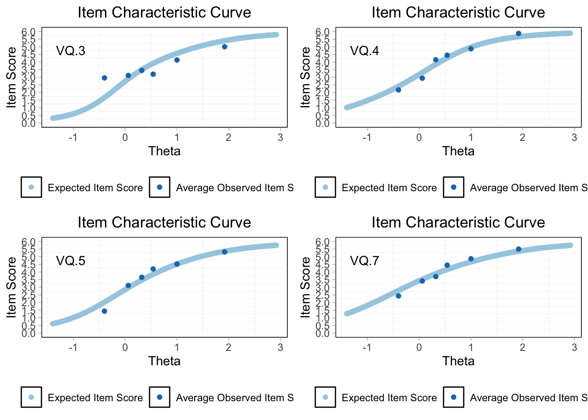
[1] "Please press Zoom on the Plots window to see the plot"Code
ICCplot(
as.data.frame(VQ_progress_data_rasch_na_omit),
itemnumber = 5,
itemdescrip = c("VQ.9"),
method = "cut"
)
Code
#PCA of residuals (assessing unidimensionality)
RIpcmPCA(VQ_progress_data_rasch_na_omit) | Eigenvalues | Proportion of variance |
|---|---|
| 1.87 | 55% |
| 1.26 | 18.2% |
| 1.08 | 15.6% |
| 0.78 | 11% |
| 0.01 | 0.2% |
Code
#item restscores
RIrestscore(VQ_progress_data_rasch_na_omit)| Item | Observed value | Model expected value | Absolute difference | Adjusted p-value (BH) | Statistical significance level | Location | Relative location |
|---|---|---|---|---|---|---|---|
| VQ.3 | 0.12 | 0.45 | 0.33 | 0.000 | *** | 0.30 | -0.26 |
| VQ.4 | 0.56 | 0.44 | 0.12 | 0.075 | . | -0.15 | -0.72 |
| VQ.5 | 0.58 | 0.44 | 0.14 | 0.033 | * | 0.19 | -0.37 |
| VQ.7 | 0.61 | 0.42 | 0.19 | 0.001 | *** | -0.19 | -0.75 |
| VQ.9 | 0.56 | 0.43 | 0.13 | 0.070 | . | -0.15 | -0.71 |
Code
#loadings on the first residual contrast (assessing clusters in data or multidimensionality)
RIloadLoc(VQ_progress_data_rasch_na_omit)Code
#residual correlations
resid_cor_VQ_progress <- RIgetResidCor(VQ_progress_data_rasch_na_omit,
iterations = 800,
cpu = 10)
RIresidcorr(VQ_progress_data_rasch_na_omit, cutoff = resid_cor_VQ_progress$p99)| VQ.3 | VQ.4 | VQ.5 | VQ.7 | VQ.9 | |
|---|---|---|---|---|---|
| VQ.3 | |||||
| VQ.4 | -0.6 | ||||
| VQ.5 | -0.35 | -0.07 | |||
| VQ.7 | -0.4 | 0.22 | 0.1 | ||
| VQ.9 | -0.41 | 0.14 | -0.02 | -0.08 | |
| Note: | |||||
|
Relative cut-off value is 0.151, which is 0.297 above the average correlation (-0.146). Correlations above the cut-off are highlighted in red text. |
Code
#partial gamma coefficients (assessing local independence)
clean_names <- janitor::clean_names
filter <- dplyr::filter
RIpartgamLD(VQ_progress_data_rasch_na_omit) #shows only significant results| Item 1 | Item 2 | Partial gamma | SE | Lower CI | Upper CI | Adjusted p-value (BH) |
|---|---|---|---|---|---|---|
| VQ.7 | VQ.4 | 0.391 | 0.128 | 0.141 | 0.642 | 0.044 |
| VQ.7 | VQ.5 | 0.368 | 0.108 | 0.156 | 0.580 | 0.013 |
Code
partgam_LD(as.data.frame(VQ_progress_data_rasch_na_omit)) #shows all output, also non-significant results Item1 Item2 gamma se pvalue padj.BH sig lower upper
1 VQ.3 VQ.4 -0.5596 0.1072 0.0000 0.0000 *** -0.7697 -0.3494
2 VQ.3 VQ.5 -0.2258 0.1125 0.0448 0.8965 -0.4464 -0.0052
3 VQ.3 VQ.7 -0.4400 0.1284 0.0006 0.0122 * -0.6916 -0.1884
4 VQ.3 VQ.9 -0.3835 0.1252 0.0022 0.0437 * -0.6288 -0.1382
5 VQ.4 VQ.5 0.1811 0.1387 0.1915 1.0000 -0.0907 0.4529
6 VQ.4 VQ.7 0.4236 0.1443 0.0033 0.0668 . 0.1407 0.7065
7 VQ.4 VQ.9 0.3306 0.1311 0.0116 0.2329 0.0738 0.5875
8 VQ.5 VQ.7 0.3054 0.1415 0.0309 0.6188 0.0280 0.5829
9 VQ.5 VQ.9 0.1368 0.1366 0.3169 1.0000 -0.1310 0.4045
10 VQ.7 VQ.9 0.1598 0.1649 0.3323 1.0000 -0.1633 0.4829
Item1 Item2 gamma se pvalue padj.BH sig lower upper
1 VQ.4 VQ.3 -0.3189 0.1342 0.0174 0.3490 -0.5819 -0.0560
2 VQ.5 VQ.3 0.2364 0.1216 0.0519 1.0000 -0.0020 0.4747
3 VQ.5 VQ.4 0.1970 0.1374 0.1516 1.0000 -0.0722 0.4662
4 VQ.7 VQ.3 0.0000 0.1503 1.0000 1.0000 -0.2947 0.2947
5 VQ.7 VQ.4 0.3913 0.1278 0.0022 0.0439 * 0.1409 0.6417
6 VQ.7 VQ.5 0.3684 0.1081 0.0007 0.0132 * 0.1565 0.5804
7 VQ.9 VQ.3 0.0294 0.1459 0.8402 1.0000 -0.2565 0.3153
8 VQ.9 VQ.4 0.3252 0.1296 0.0121 0.2426 0.0711 0.5793
9 VQ.9 VQ.5 0.0315 0.1443 0.8272 1.0000 -0.2513 0.3143
10 VQ.9 VQ.7 0.0171 0.1635 0.9167 1.0000 -0.3033 0.3375Code
#targeting
RItargeting(VQ_progress_data_rasch_na_omit)
Code
#item hierarchy
itemlabels <- data.frame(itemnr = names(VQ_progress_data_rasch_na_omit), item = NA)
RIitemHierarchy(VQ_progress_data_rasch_na_omit) 
Code
#threshold locations
RIitemparams(VQ_progress_data_rasch_na_omit)| Threshold 1 | Threshold 2 | Threshold 3 | Threshold 4 | Threshold 5 | Threshold 6 | Item location | |
|---|---|---|---|---|---|---|---|
| VQ.3 | 0.23 | -0.18 | -0.58 | -0.03 | 1.24 | 1.12 | 0.3 |
| VQ.4 | -1.16 | -1.32 | 0.17 | 0.06 | 0.71 | 0.62 | -0.15 |
| VQ.5 | -0.64 | -0.44 | -0.48 | 0.48 | 0.81 | 1.42 | 0.19 |
| VQ.7 | -1.70 | -1.10 | -0.50 | -0.18 | 0.86 | 1.48 | -0.19 |
| VQ.9 | -1.18 | -1.08 | -0.15 | -0.01 | 0.70 | 0.84 | -0.15 |
| Note: | |||||||
| Item location is the average of the thresholds for each item. |
Code
#analysis of response categories
RIitemCats(VQ_progress_data_rasch_na_omit, items = "all", xlims = c(-5, 5), legend = "left") 
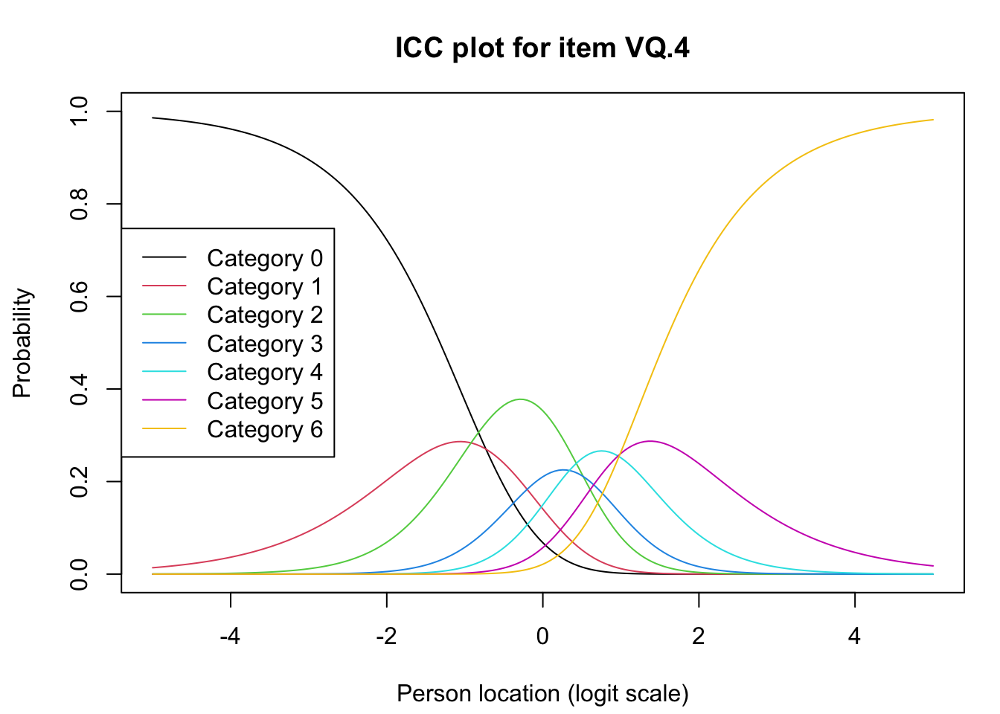


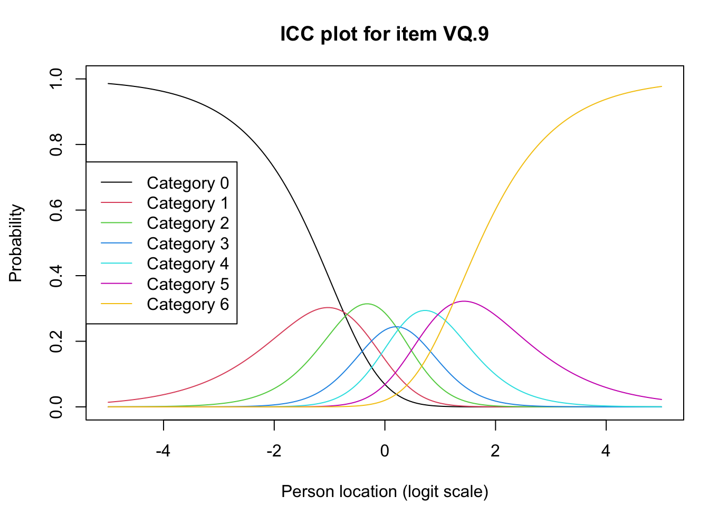
Code
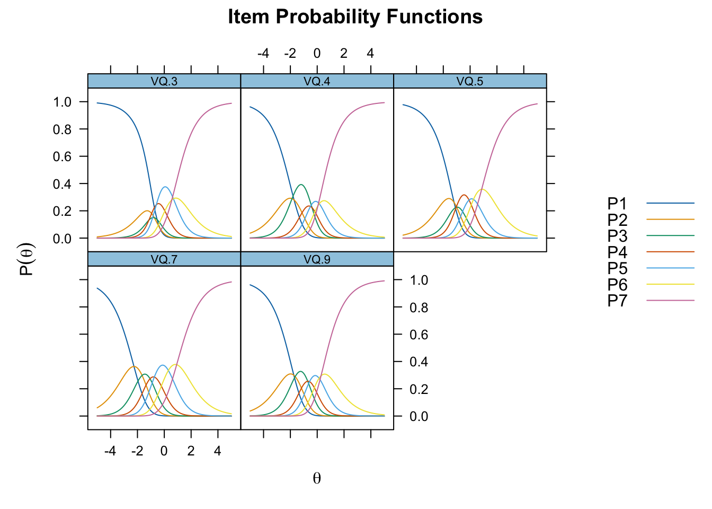
Code
#note: response categories have been analyzed using RIitemCats() function (in the easyRasch package) that estimates ICC plots using the eRm package. When there are response categories with fewer than 3 responses the easyRasch package uses estimation from the mirt package instead in the RIitemparams() and RItargeting() functions, and explain potential slight variations found in those outputs compared to the RIitemCats output. For transparency, ICC plots from the mirt package are therefore also displayed. Response category analysis was however consequently conducted using the RIitemCats() function that uses estimation from the eRm package. 

5.4 Re-analysis of VQ_progress recoded version
Based on the analysis of the response categories and threshold locations, scale steps were merged and recoded so that each kept scale step had the highest response probability at some point on the person location scale, and also so that all threshold locations were in the right order for all items. Recoded items were given new names with the abbreviation “_recoded”.
Code
#add recoded VQ_progress items
bulls_eye_merged_superfinal_data <- bulls_eye_merged_superfinal_data %>%
mutate(
# Recoding VQ.3 (0+1; 2+3)
VQ.3_recoded = recode(VQ.3,
`0` = 0, `1` = 0,
`2` = 1, `3` = 1,
`4` = 2,
`5` = 3,
`6` = 4),
# Recoding VQ.4 (0+1; 3+4; 5+6)
VQ.4_recoded = recode(VQ.4,
`0` = 0, `1` = 0,
`2` = 1,
`3` = 2, `4` = 2,
`5` = 3, `6` = 3),
# Recoding VQ.5 (0+1+2)
VQ.5_recoded = recode(VQ.5,
`0` = 0, `1` = 0,`2` = 0,
`3` = 1,
`4` = 2,
`5` = 3,
`6` = 4),
# Recoding VQ.7 (0+1)
VQ.7_recoded = recode(VQ.7,
`0` = 0, `1` = 0,
`2` = 1,
`3` = 2,
`4` = 3,
`5` = 4,
`6` = 5),
# Recoding VQ.9 (0+1)
VQ.9_recoded = recode(VQ.9,
`0` = 0, `1` = 0,
`2` = 1,
`3` = 2,
`4` = 3,
`5` = 4,
`6` = 5))Code
#removing missing values
#in practice this means removing participants from the intervention study (Hockeystudien) that did not complete VQ
VQ_progress_data_rasch_recoded_na_omit <- VQ_progress_data_rasch_recoded %>%
select(
VQ.3_recoded,
VQ.4_recoded,
VQ.5_recoded,
VQ.7_recoded,
VQ.9_recoded
) %>%
na.omit()
RImissing(VQ_progress_data_rasch_recoded_na_omit)[1] "No missing data."Code
#re-analysis of response categories using VQ_progress recoded
RIitemCats(
VQ_progress_data_rasch_recoded_na_omit,
items = "all",
xlims = c(-5, 5),
legend = "left"
)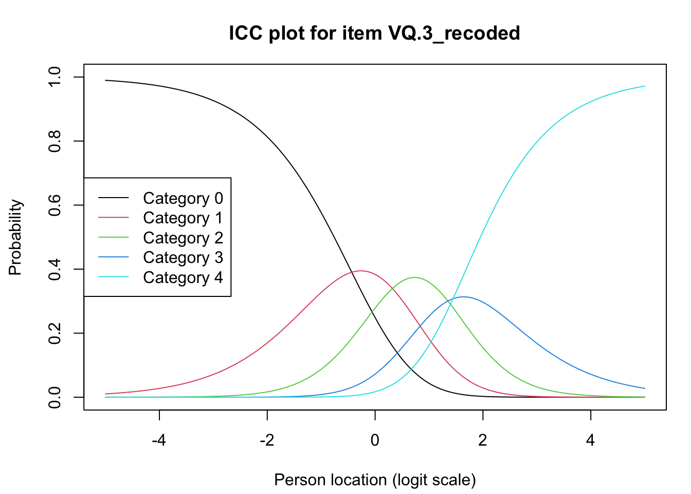
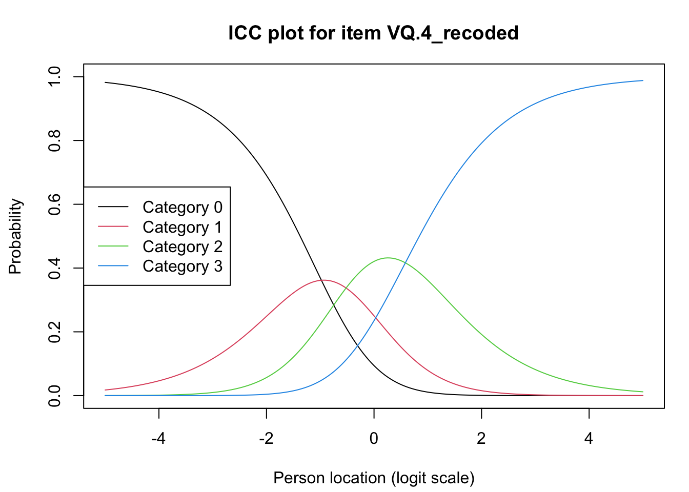

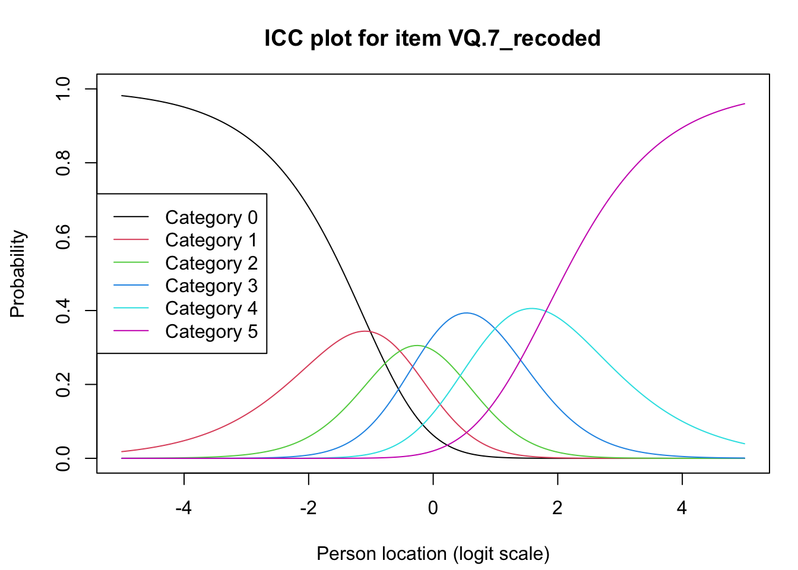

Code

Code
#note: response categories have been analyzed using RIitemCats() function (in the easyRasch package) that estimates ICC plots using the eRm package. When there are response categories with fewer than 3 responses the easyRasch package uses estimation from the mirt package instead in the RIitemparams() and RItargeting() functions, and explain potential slight variations found in those outputs compared to the RIitemCats output. For transparency, ICC plots from the mirt package are therefore also displayed. Response category analysis was however consequently conducted using the RIitemCats() function that uses estimation from the eRm package. Code
#tile plot (response category frequency for the items)
RItileplot(VQ_progress_data_rasch_recoded_na_omit)
Code
#conditional likelihood ratio tests (CLR)
#a test of homogeneity that assesses whether item parameters are homogeneous across all levels of theta
clr_tests(VQ_progress_data_rasch_recoded_na_omit, model = "PCM")
Conditional Likelihood Ratio Tests: clr df pvalue sig
overall 40.8 20 0.004 **Code
| Item | InfitMSQ | Infit thresholds | OutfitMSQ | Outfit thresholds | Infit diff | Outfit diff | Relative location |
|---|---|---|---|---|---|---|---|
| VQ.3_recoded | 1.821 | [0.812, 1.254] | 1.898 | [0.802, 1.331] | 0.567 | 0.567 | -0.02 |
| VQ.4_recoded | 0.721 | [0.807, 1.297] | 0.657 | [0.766, 1.298] | 0.086 | 0.109 | -1.00 |
| VQ.5_recoded | 0.804 | [0.783, 1.215] | 0.804 | [0.77, 1.31] | no misfit | no misfit | 0.15 |
| VQ.7_recoded | 0.762 | [0.78, 1.211] | 0.768 | [0.765, 1.253] | 0.018 | no misfit | -0.47 |
| VQ.9_recoded | 0.947 | [0.778, 1.233] | 0.944 | [0.758, 1.341] | no misfit | no misfit | -0.50 |
| Note: | |||||||
|
MSQ values based on conditional calculations (n = 122 complete cases). Simulation based thresholds from 100 simulated datasets. |
Code
#re-analysis of conditional item characteristic curves
ICCplot(
as.data.frame(VQ_progress_data_rasch_recoded_na_omit),
itemnumber = 1:4,
itemdescrip = c(
"VQ.3_recoded",
"VQ.4_recoded",
"VQ.5_recoded",
"VQ.7_recoded"
),
method = "cut"
)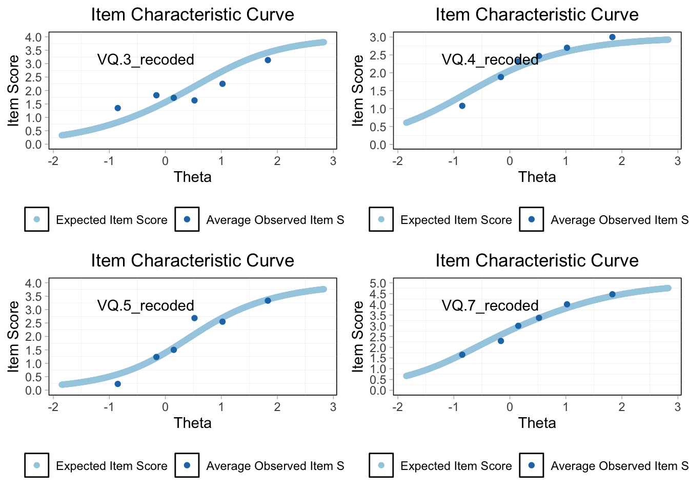
[1] "Please press Zoom on the Plots window to see the plot"Code
ICCplot(
as.data.frame(VQ_progress_data_rasch_recoded_na_omit),
itemnumber = 5,
itemdescrip = c("VQ.9_recoded"),
method = "cut"
)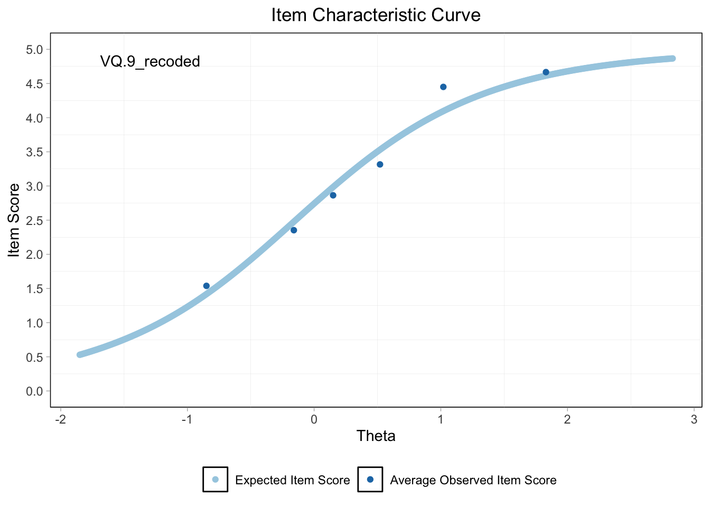
Code
#re-analysis of PCA of residuals (assessing unidimensionality)
RIpcmPCA(VQ_progress_data_rasch_recoded_na_omit)| Eigenvalues | Proportion of variance |
|---|---|
| 1.74 | 48.3% |
| 1.37 | 22.6% |
| 1.11 | 17.5% |
| 0.76 | 11.2% |
| 0.01 | 0.3% |
Code
#re-analysis of item restscores
RIrestscore(VQ_progress_data_rasch_recoded_na_omit)| Item | Observed value | Model expected value | Absolute difference | Adjusted p-value (BH) | Statistical significance level | Location | Relative location |
|---|---|---|---|---|---|---|---|
| VQ.3_recoded | 0.13 | 0.48 | 0.35 | 0.000 | *** | 0.32 | -0.02 |
| VQ.4_recoded | 0.66 | 0.43 | 0.23 | 0.000 | *** | -0.65 | -1.00 |
| VQ.5_recoded | 0.61 | 0.48 | 0.13 | 0.043 | * | 0.50 | 0.15 |
| VQ.7_recoded | 0.61 | 0.48 | 0.13 | 0.023 | * | -0.12 | -0.47 |
| VQ.9_recoded | 0.55 | 0.49 | 0.06 | 0.404 | -0.16 | -0.50 |
Code
#re-analysis of loadings on the first residual contrast (assessing clusters in data or multidimensionality)
RIloadLoc(VQ_progress_data_rasch_recoded_na_omit)
Code
#re-analysis of residual correlations
resid_cor_VQ_progress_recoded <- RIgetResidCor(VQ_progress_data_rasch_recoded_na_omit,
iterations = 800,
cpu = 10)
RIresidcorr(VQ_progress_data_rasch_recoded_na_omit, cutoff = resid_cor_VQ_progress_recoded$p99)| VQ.3_recoded | VQ.4_recoded | VQ.5_recoded | VQ.7_recoded | VQ.9_recoded | |
|---|---|---|---|---|---|
| VQ.3_recoded | |||||
| VQ.4_recoded | -0.46 | ||||
| VQ.5_recoded | -0.3 | -0.06 | |||
| VQ.7_recoded | -0.39 | 0.2 | 0.04 | ||
| VQ.9_recoded | -0.41 | 0.13 | -0.19 | -0.2 | |
| Note: | |||||
|
Relative cut-off value is 0.139, which is 0.303 above the average correlation (-0.164). Correlations above the cut-off are highlighted in red text. |
Code
#re-analysis of partial gamma coefficients (assessing local independence)
RIpartgamLD(VQ_progress_data_rasch_recoded_na_omit) #shows only significant results| Item 1 | Item 2 | Partial gamma | SE | Lower CI | Upper CI | Adjusted p-value (BH) |
|---|---|---|---|---|---|---|
| VQ.4_recoded | VQ.7_recoded | 0.566 | 0.126 | 0.320 | 0.812 | 0.000 |
| VQ.4_recoded | VQ.9_recoded | 0.431 | 0.130 | 0.176 | 0.686 | 0.018 |
Code
partgam_LD(as.data.frame(VQ_progress_data_rasch_recoded_na_omit)) #shows all output, also non-significant results Item1 Item2 gamma se pvalue padj.BH sig lower upper
1 VQ.3_recoded VQ.4_recoded -0.4865 0.1267 0.0001 0.0025 ** -0.7348 -0.2382
2 VQ.3_recoded VQ.5_recoded -0.2375 0.1233 0.0540 1.0000 -0.4791 0.0041
3 VQ.3_recoded VQ.7_recoded -0.3704 0.1367 0.0067 0.1347 -0.6383 -0.1025
4 VQ.3_recoded VQ.9_recoded -0.2781 0.1264 0.0278 0.5568 -0.5259 -0.0303
5 VQ.4_recoded VQ.5_recoded 0.2165 0.1774 0.2224 1.0000 -0.1313 0.5643
6 VQ.4_recoded VQ.7_recoded 0.5660 0.1256 0.0000 0.0001 *** 0.3198 0.8123
7 VQ.4_recoded VQ.9_recoded 0.4309 0.1299 0.0009 0.0183 * 0.1762 0.6856
8 VQ.5_recoded VQ.7_recoded 0.2285 0.1519 0.1327 1.0000 -0.0693 0.5263
9 VQ.5_recoded VQ.9_recoded 0.0186 0.1430 0.8966 1.0000 -0.2617 0.2989
10 VQ.7_recoded VQ.9_recoded 0.1073 0.1498 0.4740 1.0000 -0.1864 0.4009
Item1 Item2 gamma se pvalue padj.BH sig lower upper
1 VQ.4_recoded VQ.3_recoded -0.2000 0.1486 0.1783 1.0000 -0.4912 0.0912
2 VQ.5_recoded VQ.3_recoded 0.2000 0.1286 0.1198 1.0000 -0.0520 0.4520
3 VQ.5_recoded VQ.4_recoded 0.0211 0.1989 0.9157 1.0000 -0.3689 0.4110
4 VQ.7_recoded VQ.3_recoded -0.0246 0.1553 0.8742 1.0000 -0.3290 0.2798
5 VQ.7_recoded VQ.4_recoded 0.3679 0.1463 0.0119 0.2384 0.0811 0.6547
6 VQ.7_recoded VQ.5_recoded 0.3498 0.1199 0.0035 0.0705 . 0.1148 0.5848
7 VQ.9_recoded VQ.3_recoded -0.0312 0.1572 0.8424 1.0000 -0.3393 0.2768
8 VQ.9_recoded VQ.4_recoded 0.3237 0.1368 0.0179 0.3588 0.0556 0.5917
9 VQ.9_recoded VQ.5_recoded -0.0758 0.1571 0.6296 1.0000 -0.3836 0.2321
10 VQ.9_recoded VQ.7_recoded 0.0108 0.1554 0.9448 1.0000 -0.2939 0.3154Code
#re-analysis of targeting
RItargeting(VQ_progress_data_rasch_recoded_na_omit)
Code
#re-analysis of item hierarchy
itemlabels <- data.frame(itemnr = names(VQ_progress_data_rasch_recoded_na_omit),
item = NA)
RIitemHierarchy(VQ_progress_data_rasch_recoded_na_omit)
Code
#re-analysis of threshold locations
RIitemparams(VQ_progress_data_rasch_recoded_na_omit)| Threshold 1 | Threshold 2 | Threshold 3 | Threshold 4 | Threshold 5 | Item location | |
|---|---|---|---|---|---|---|
| VQ.3_recoded | -0.78 | -0.02 | 1.00 | 1.10 | NA | 0.32 |
| VQ.4_recoded | -1.32 | -0.86 | 0.24 | NA | NA | -0.65 |
| VQ.5_recoded | -0.19 | 0.17 | 0.60 | 1.42 | NA | 0.5 |
| VQ.7_recoded | -1.35 | -0.88 | -0.47 | 0.65 | 1.47 | -0.12 |
| VQ.9_recoded | -1.21 | -0.50 | -0.30 | 0.47 | 0.76 | -0.16 |
| Note: | ||||||
| Item location is the average of the thresholds for each item. |


- VQ_progress recoded resulted in ordered response categories.
- the conditional likelihood ratio (CLR) test is significant which indicate that item parameters may not be homogeneous across all levels of theta.
- item 3 is underfit to the model (see both the conditional item fit analysis and the item restscore analysis) which indicates it does not belong to the dimension. It will therefore be removed.
- item 4 is overfit to the model (see both the conditional item fit analysis and the item restscore analysis) and possibly redundant. Indications of problems with local dependence is observed with item 7 (see the residual correlation and the partial gamma coefficient analysis), and partly with item 9 (see the partial gamma coefficient analysis). Item 4 is however kept for now until a trimmed version without item 3 is analyzed.
- both items 5 and 7 are borderline overfit to the model (see both the conditional item fit analysis and the item restscore analysis) and possibly redundant. The items are however also kept for now until a trimmed version without item 3 is analyzed.
- performing Rasch re-analysis with a trimmed recoded VQ_progress without item 3.
5.5 Re-analysis of VQ_progress recoded and trimmed version

Code
#removing missing values
#in practice this means removing participants from the intervention study (Hockeystudien) that did not complete VQ
VQ_progress_data_rasch_recoded_trimmed_na_omit <- VQ_progress_data_rasch_recoded_trimmed %>%
select(
VQ.4_recoded,
VQ.5_recoded,
VQ.7_recoded,
VQ.9_recoded
) %>%
na.omit()
RImissing(VQ_progress_data_rasch_recoded_trimmed_na_omit)[1] "No missing data."Code
#tile plot (response category frequency for the items)
RItileplot(VQ_progress_data_rasch_recoded_trimmed_na_omit)
Code
#conditional likelihood ratio tests (CLR)
#a test of homogeneity that assesses whether item parameters are homogeneous across all levels of theta
clr_tests(VQ_progress_data_rasch_recoded_trimmed_na_omit, model = "PCM")
Conditional Likelihood Ratio Tests: clr df pvalue sig
overall 17.8 16 0.34 Code
#re-analysis of conditional item fit (assessing unidimensionaliity)
simfit1_VQ_progress_recoded_trimmed <- RIgetfit(VQ_progress_data_rasch_recoded_trimmed_na_omit,
iterations = 100,
cpu = 10)
RIitemfit(
VQ_progress_data_rasch_recoded_trimmed_na_omit,
simfit1_VQ_progress_recoded_trimmed,
cutoff = c(0.005, 0.995)
)| Item | InfitMSQ | Infit thresholds | OutfitMSQ | Outfit thresholds | Infit diff | Outfit diff | Relative location |
|---|---|---|---|---|---|---|---|
| VQ.4_recoded | 0.779 | [0.794, 1.144] | 0.708 | [0.724, 1.285] | 0.015 | 0.016 | -1.35 |
| VQ.5_recoded | 1.152 | [0.78, 1.32] | 1.125 | [0.772, 1.356] | no misfit | no misfit | 0.23 |
| VQ.7_recoded | 0.986 | [0.771, 1.288] | 0.954 | [0.796, 1.287] | no misfit | no misfit | -0.66 |
| VQ.9_recoded | 1.247 | [0.719, 1.281] | 1.181 | [0.727, 1.291] | no misfit | no misfit | -0.71 |
| Note: | |||||||
|
MSQ values based on conditional calculations (n = 122 complete cases). Simulation based thresholds from 100 simulated datasets. |
Code
#re-analysis of conditional item characteristic curves
ICCplot(
as.data.frame(VQ_progress_data_rasch_recoded_trimmed_na_omit),
itemnumber = 1:4,
itemdescrip = c(
"VQ.4_recoded",
"VQ.5_recoded",
"VQ.7_recoded",
"VQ.9_recoded"
),
method = "cut"
)
[1] "Please press Zoom on the Plots window to see the plot"Code
#re-analysis of PCA of residuals (assessing unidimensionality)
RIpcmPCA(VQ_progress_data_rasch_recoded_trimmed_na_omit)| Eigenvalues | Proportion of variance |
|---|---|
| 1.61 | 43.6% |
| 1.41 | 34.8% |
| 0.97 | 21.2% |
| 0.01 | 0.3% |
Code
#re-analysis of item restscores
RIrestscore(VQ_progress_data_rasch_recoded_trimmed_na_omit)| Item | Observed value | Model expected value | Absolute difference | Adjusted p-value (BH) | Statistical significance level | Location | Relative location |
|---|---|---|---|---|---|---|---|
| VQ.4_recoded | 0.73 | 0.60 | 0.13 | 0.059 | . | -0.77 | -1.35 |
| VQ.5_recoded | 0.61 | 0.63 | 0.02 | 0.701 | 0.82 | 0.23 | |
| VQ.7_recoded | 0.66 | 0.63 | 0.03 | 0.670 | -0.07 | -0.66 | |
| VQ.9_recoded | 0.58 | 0.64 | 0.06 | 0.670 | -0.12 | -0.71 |
Code
#re-analysis of loadings on the first residual contrast (assessing clusters in data or multidimensionality)
RIloadLoc(VQ_progress_data_rasch_recoded_trimmed_na_omit)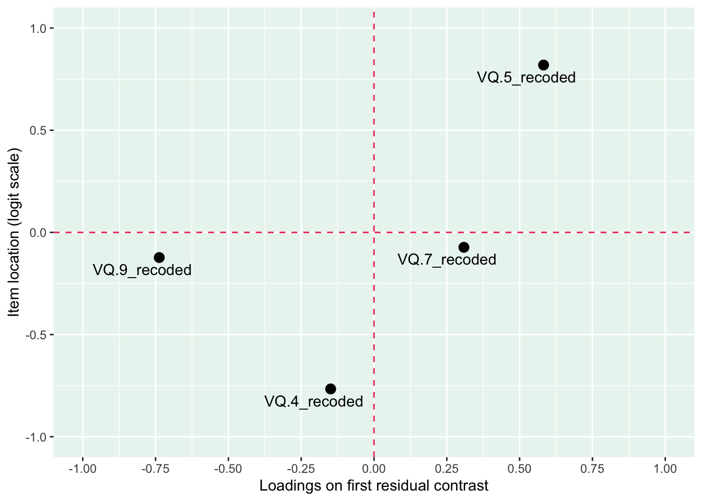
Code
#re-analysis of residual correlations
resid_cor_VQ_progress_recoded_trimmed <- RIgetResidCor(VQ_progress_data_rasch_recoded_trimmed_na_omit,
iterations = 800,
cpu = 10)
RIresidcorr(VQ_progress_data_rasch_recoded_trimmed_na_omit, cutoff = resid_cor_VQ_progress_recoded_trimmed$p99)| VQ.4_recoded | VQ.5_recoded | VQ.7_recoded | VQ.9_recoded | |
|---|---|---|---|---|
| VQ.4_recoded | ||||
| VQ.5_recoded | -0.33 | |||
| VQ.7_recoded | -0.05 | -0.19 | ||
| VQ.9_recoded | -0.13 | -0.44 | -0.52 | |
| Note: | ||||
|
Relative cut-off value is 0.01, which is 0.286 above the average correlation (-0.276). Correlations above the cut-off are highlighted in red text. |
Code
#re-analysis of partial gamma coefficients (assessing local independence)
RIpartgamLD(VQ_progress_data_rasch_recoded_trimmed_na_omit) #shows only significant results| Item 1 | Item 2 | Partial gamma | SE | Lower CI | Upper CI | Adjusted p-value (BH) |
|---|---|---|---|---|---|---|
| VQ.4_recoded | VQ.7_recoded | 0.41 | 0.143 | 0.130 | 0.690 | 0.049 |
| VQ.4_recoded | VQ.9_recoded | 0.4 | 0.133 | 0.138 | 0.662 | 0.033 |
Code
partgam_LD(as.data.frame(VQ_progress_data_rasch_recoded_trimmed_na_omit)) #shows all output, also non-significant results Item1 Item2 gamma se pvalue padj.BH sig lower upper
1 VQ.4_recoded VQ.5_recoded -0.0405 0.1781 0.8203 1.0000 -0.3895 0.3086
2 VQ.4_recoded VQ.7_recoded 0.4100 0.1428 0.0041 0.0492 * 0.1300 0.6900
3 VQ.4_recoded VQ.9_recoded 0.4000 0.1335 0.0027 0.0328 * 0.1383 0.6617
4 VQ.5_recoded VQ.7_recoded 0.0042 0.1610 0.9791 1.0000 -0.3113 0.3197
5 VQ.5_recoded VQ.9_recoded -0.2245 0.1361 0.0990 1.0000 -0.4912 0.0422
6 VQ.7_recoded VQ.9_recoded -0.0705 0.1426 0.6208 1.0000 -0.3500 0.2089
Item1 Item2 gamma se pvalue padj.BH sig lower upper
1 VQ.5_recoded VQ.4_recoded -0.3333 0.1689 0.0484 0.5809 -0.6643 -0.0023
2 VQ.7_recoded VQ.4_recoded 0.2577 0.1610 0.1095 1.0000 -0.0579 0.5733
3 VQ.7_recoded VQ.5_recoded 0.1907 0.1500 0.2037 1.0000 -0.1034 0.4847
4 VQ.9_recoded VQ.4_recoded 0.1681 0.1560 0.2812 1.0000 -0.1376 0.4737
5 VQ.9_recoded VQ.5_recoded -0.1349 0.1400 0.3349 1.0000 -0.4093 0.1394
6 VQ.9_recoded VQ.7_recoded -0.2549 0.1427 0.0740 0.8885 -0.5346 0.0248Code
#re-analysis of targeting
RItargeting(VQ_progress_data_rasch_recoded_trimmed_na_omit)
Code
#re-analysis of item hierarchy
itemlabels <- data.frame(itemnr = names(VQ_progress_data_rasch_recoded_trimmed_na_omit),
item = NA)
RIitemHierarchy(VQ_progress_data_rasch_recoded_trimmed_na_omit)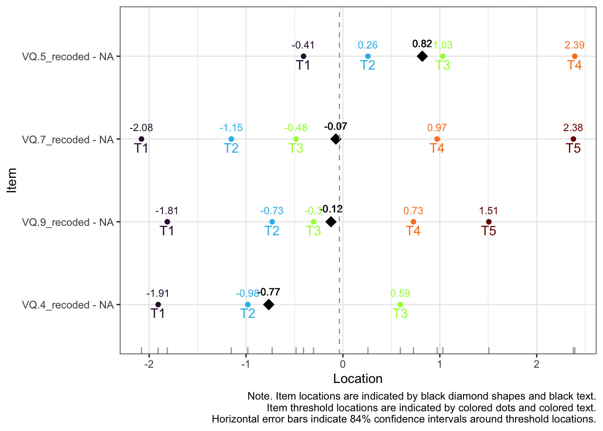
Code
#re-analysis of threshold locations
RIitemparams(VQ_progress_data_rasch_recoded_trimmed_na_omit)| Threshold 1 | Threshold 2 | Threshold 3 | Threshold 4 | Threshold 5 | Item location | |
|---|---|---|---|---|---|---|
| VQ.4_recoded | -1.91 | -0.98 | 0.59 | NA | NA | -0.77 |
| VQ.5_recoded | -0.41 | 0.26 | 1.03 | 2.39 | NA | 0.82 |
| VQ.7_recoded | -2.08 | -1.15 | -0.48 | 0.97 | 2.38 | -0.07 |
| VQ.9_recoded | -1.81 | -0.73 | -0.30 | 0.73 | 1.51 | -0.12 |
| Note: | ||||||
| Item location is the average of the thresholds for each item. |
Code
#analysis of response categories
RIitemCats(VQ_progress_data_rasch_recoded_trimmed_na_omit, items = "all", xlims = c(-5, 5), legend = "left") 

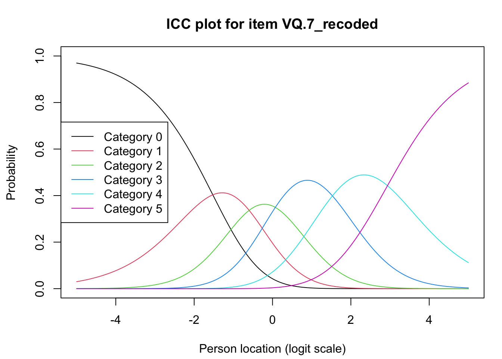

Code

Code
#note: response categories have been analyzed using RIitemCats() function (in the easyRasch package) that estimates ICC plots using the eRm package. When there are response categories with fewer than 3 responses the easyRasch package uses estimation from the mirt package instead in the RIitemparams() and RItargeting() functions, and explain potential slight variations found in those outputs compared to the RIitemCats output. For transparency, ICC plots from the mirt package are therefore also displayed. Response category analysis was however consequently conducted using the RIitemCats() function that uses estimation from the eRm package. Code
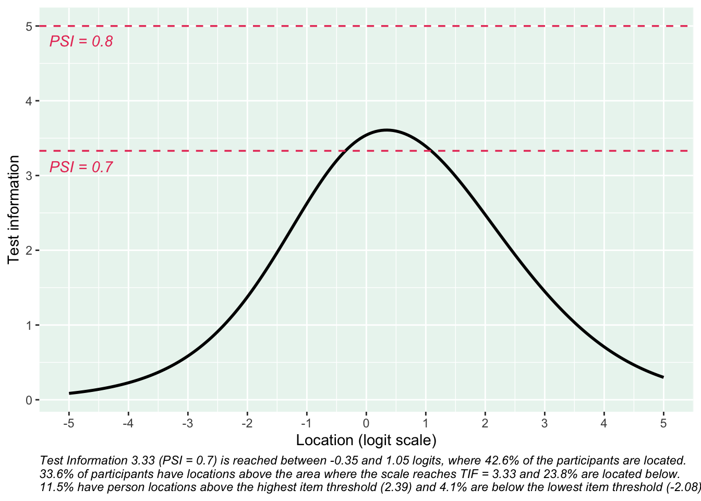
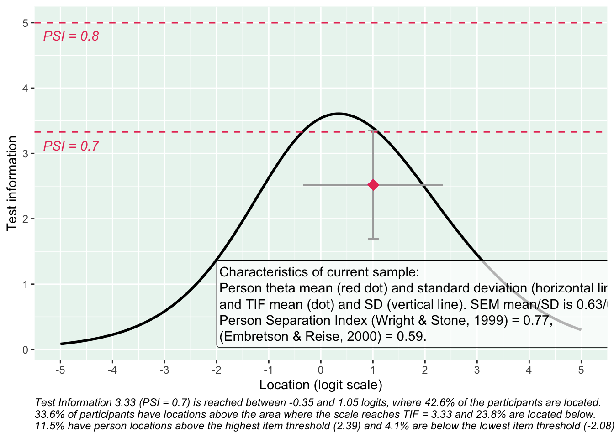
- Item 4 performs better now but is still borderline overfit (see conditional item fit analysis and the item restscore analysis) and possibly redundant to the model. No major concerns about local dependence as there are no more above threshold residual correlations, although significant results were still demonstrated in the partial gamma coefficient analysis with items 7 and 9. Item 4 is however kept in the scale for the validity analysis.
- Item 9 is now borderline underfit to the model (see conditional item fit analysis) which could indicate that the item does not belong to the dimension. The item is however kept in the scale for the validity analysis.
- Poor reliability is demonstrated in the TIF analysis.
5.6 VQ_progress and BEA validity analysis
Validity between VQ_progress and BEA is investigated by correlation analysis. As both scales has undergone Rasch analysis, participants theta estimates (computed with weighted likelihood estimation - WLE) will be correlated, and since thetas are interval data, Pearson’s correlation is applied.
Code
#complete cases data frame for validity analyses
#removing missing values in relevant items for complete cases analysis
#only BE items and one item from the other scales in the bulls eye study
#is needed (in this case the SubjektivPrestation item)
#this is because there are no missing values for the other scales
#after the intervention study (Hockeystudien) participants have been removed
#therefore this data frame will work for all validity analyses
items_validity_analyses <- c(
"BE_Competition_recoded",
"BE_Training_recoded",
"BE_PreparationRecovery",
"BE_Life",
"SubjektivPrestation"
)
data_complete_cases <- bulls_eye_merged_superfinal_data[complete.cases(bulls_eye_merged_superfinal_data[, items_validity_analyses]), ]
#155 participants to begin with
#33 participants from the intervention study (Hockeystudien) were removed (did not complete any scale beside Bulls Eye)
#1 participant (not from the intervention study) who completed the other scales but not the dartboard in Bulls Eye (only other parts of BE) and were therefore removed
#results in a complete cases data frame with 121 participants
nrow(data_complete_cases)[1] 121Code
#item data frames
BE_validity_analyses <- data_complete_cases[, c(
"BE_Competition_recoded",
"BE_Training_recoded",
"BE_PreparationRecovery",
"BE_Life"
)]
VQ_progress_validity_analyses <- data_complete_cases[, c(
"VQ.4_recoded",
"VQ.5_recoded",
"VQ.7_recoded",
"VQ.9_recoded"
)]
#extracting thetas
BE_thetas <- RIestThetas(BE_validity_analyses)
VQ_progress_thetas <- RIestThetas(VQ_progress_validity_analyses)
#adding thetas to the data frame
data_complete_cases$BE_thetas_WLE <- BE_thetas$WLE
data_complete_cases$VQ_progress_thetas_WLE <- VQ_progress_thetas$WLECode
correlation_BE_VQ_progress <- cor_test(
data_complete_cases,
x = "BE_thetas_WLE",
y = "VQ_progress_thetas_WLE",
method = "pearson"
)
print(correlation_BE_VQ_progress)Parameter1 | Parameter2 | r | 95% CI | t(119) | p
---------------------------------------------------------------------------------
BE_thetas_WLE | VQ_progress_thetas_WLE | 0.46 | [0.31, 0.59] | 5.66 | < .001***
Observations: 121Code
plot(correlation_BE_VQ_progress)
Some participants did not complete BEA and VQ during the same day as intended. Therefore, a sensitivity analysis is conducted.
Code
#creating data frame with only participants that completed Bulls Eye and the other scales during the same day
#since 17 participants did not (has already been checked in a prior validity analysis), 104 participants will remain in the sensitivity analysis
data_complete_cases_less_than_1day <- subset(data_complete_cases, time_latency_survey1_bulls_eye1_days < 1)Code
#looking only at participants who completed Bulls Eye and the other scales during the same day (N = 104)
#sensitivity analysis VQ_progress and BE
BE_validity_analyses_less1day <- data_complete_cases_less_than_1day[, c(
"BE_Competition_recoded",
"BE_Training_recoded",
"BE_PreparationRecovery",
"BE_Life"
)]
VQ_progress_validity_analyses_less1day <- data_complete_cases_less_than_1day[, c(
"VQ.4_recoded",
"VQ.5_recoded",
"VQ.7_recoded",
"VQ.9_recoded"
)]
#extracting thetas
BE_thetas_less1day <- RIestThetas(BE_validity_analyses_less1day)
VQ_progress_thetas_less1day <- RIestThetas(VQ_progress_validity_analyses_less1day)
#adding thetas to the data frame
data_complete_cases_less_than_1day$BE_thetas_less1day_WLE <- BE_thetas_less1day$WLE
data_complete_cases_less_than_1day$VQ_progress_thetas_less1day_WLE <- VQ_progress_thetas_less1day$WLE
#analysis only with participants completing Bulls Eye and VQ the same day
correlation_BE_VQ_progress_less1day <- cor_test(
data_complete_cases_less_than_1day,
x = "BE_thetas_less1day_WLE",
y = "VQ_progress_thetas_less1day_WLE",
method = "pearson"
)
print(correlation_BE_VQ_progress_less1day)Parameter1 | Parameter2 | r | 95% CI
------------------------------------------------------------------------------
BE_thetas_less1day_WLE | VQ_progress_thetas_less1day_WLE | 0.45 | [0.28, 0.59]
Parameter1 | t(102) | p
-------------------------------------------
BE_thetas_less1day_WLE | 5.12 | < .001***
Observations: 104Code
#we can also check if there is a statistically significant difference
#by adding same or different day as a predictor
data_complete_cases_sensitivity_analysis <- data_complete_cases %>%
mutate(group = factor(ifelse(time_latency_survey1_bulls_eye1_days < 1,"same_day","different_day")))
m0_VQ_progress <- lm(VQ_progress_thetas_WLE ~ BE_thetas_WLE, data = data_complete_cases_sensitivity_analysis)
m1_VQ_progress <- lm(VQ_progress_thetas_WLE ~ BE_thetas_WLE + group, data = data_complete_cases_sensitivity_analysis)
anova(m0_VQ_progress, m1_VQ_progress)Analysis of Variance Table
Model 1: VQ_progress_thetas_WLE ~ BE_thetas_WLE
Model 2: VQ_progress_thetas_WLE ~ BE_thetas_WLE + group
Res.Df RSS Df Sum of Sq F Pr(>F)
1 119 218.05
2 118 216.22 1 1.8288 0.9981 0.3198Adding whether BE and VQ_progress were completed during the same day or not as a predictor did not significantly alter the results.
Now moving on to analyzing the other part of VQ, VQ_obstruction (to valued living, items 1, 2, 6, 8, 10).
5.7 VQ_obstruction: Rasch analysis and BEA validity investigation

Code
#removing missing values
#in practice this means removing participants from the intervention study (Hockeystudien) that did not complete VQ
VQ_obstruction_data_rasch_na_omit <- VQ_obstruction_data_rasch %>%
select(VQ.1, VQ.2, VQ.6, VQ.8, VQ.10) %>%
na.omit()
RImissing(VQ_obstruction_data_rasch_na_omit)[1] "No missing data."Code
#tile plot (response category frequency for the items)
RItileplot(VQ_obstruction_data_rasch_na_omit)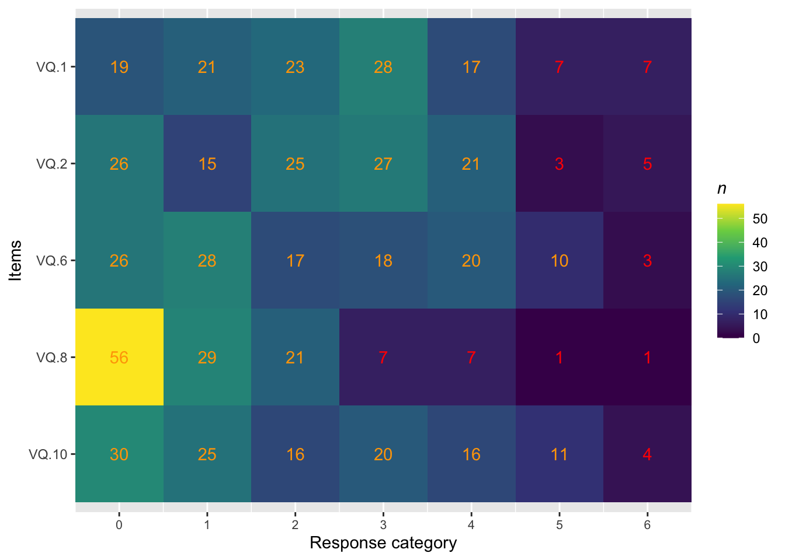
Code
#conditional likelihood ratio tests (CLR)
#a test of homogeneity that assesses whether item parameters are homogeneous across all levels of theta
clr_tests(VQ_obstruction_data_rasch_na_omit, model = "PCM")
Conditional Likelihood Ratio Tests: clr df pvalue sig
overall 32.9 29 0.28 Code
| Item | InfitMSQ | Infit thresholds | OutfitMSQ | Outfit thresholds | Infit diff | Outfit diff | Relative location |
|---|---|---|---|---|---|---|---|
| VQ.1 | 0.927 | [0.797, 1.235] | 0.951 | [0.787, 1.223] | no misfit | no misfit | 0.28 |
| VQ.2 | 0.981 | [0.797, 1.309] | 0.971 | [0.78, 1.3] | no misfit | no misfit | 0.42 |
| VQ.6 | 0.989 | [0.769, 1.234] | 0.977 | [0.75, 1.265] | no misfit | no misfit | 0.53 |
| VQ.8 | 1.038 | [0.762, 1.209] | 0.994 | [0.78, 1.222] | no misfit | no misfit | 1.10 |
| VQ.10 | 1.091 | [0.812, 1.21] | 1.158 | [0.751, 1.381] | no misfit | no misfit | 0.51 |
| Note: | |||||||
|
MSQ values based on conditional calculations (n = 122 complete cases). Simulation based thresholds from 68 simulated datasets. |
Code
#conditional item characteristic curves
ICCplot(
as.data.frame(VQ_obstruction_data_rasch_na_omit),
itemnumber = 1:4,
itemdescrip = c("VQ.1", "VQ.2", "VQ.6", "VQ.8"),
method = "cut"
)
[1] "Please press Zoom on the Plots window to see the plot"Code
ICCplot(
as.data.frame(VQ_obstruction_data_rasch_na_omit),
itemnumber = 5,
itemdescrip = c("VQ.10"),
method = "cut"
)
Code
#PCA of residuals (assessing unidimensionality)
RIpcmPCA(VQ_obstruction_data_rasch_na_omit) | Eigenvalues | Proportion of variance |
|---|---|
| 1.69 | 34.8% |
| 1.27 | 24.4% |
| 1.07 | 20.9% |
| 0.97 | 19.8% |
| 0.01 | 0.2% |
Code
#item restscores
RIrestscore(VQ_obstruction_data_rasch_na_omit)| Item | Observed value | Model expected value | Absolute difference | Adjusted p-value (BH) | Statistical significance level | Location | Relative location |
|---|---|---|---|---|---|---|---|
| VQ.1 | 0.47 | 0.44 | 0.03 | 0.991 | -0.29 | 0.28 | |
| VQ.2 | 0.47 | 0.44 | 0.03 | 0.991 | -0.14 | 0.42 | |
| VQ.6 | 0.46 | 0.44 | 0.02 | 0.991 | -0.04 | 0.53 | |
| VQ.8 | 0.40 | 0.39 | 0.01 | 0.991 | 0.53 | 1.10 | |
| VQ.10 | 0.45 | 0.45 | 0.00 | 0.991 | -0.06 | 0.51 |
Code
#loadings on the first residual contrast (assessing clusters in data or multidimensionality)
RIloadLoc(VQ_obstruction_data_rasch_na_omit)
Code
#residual correlations
resid_cor_VQ_obstruction <- RIgetResidCor(VQ_obstruction_data_rasch_na_omit,
iterations = 800,
cpu = 10)
RIresidcorr(VQ_obstruction_data_rasch_na_omit, cutoff = resid_cor_VQ_obstruction$p99) | VQ.1 | VQ.2 | VQ.6 | VQ.8 | VQ.10 | |
|---|---|---|---|---|---|
| VQ.1 | |||||
| VQ.2 | -0.01 | ||||
| VQ.6 | -0.06 | -0.19 | |||
| VQ.8 | -0.28 | -0.16 | -0.3 | ||
| VQ.10 | -0.35 | -0.35 | -0.24 | 0.05 | |
| Note: | |||||
|
Relative cut-off value is 0.117, which is 0.306 above the average correlation (-0.189). Correlations above the cut-off are highlighted in red text. |
Code
#partial gamma coefficients (assessing local independence)
RIpartgamLD(VQ_obstruction_data_rasch_na_omit) #shows only significant results[1] "No statistically significant local dependency found."Code
partgam_LD(as.data.frame(VQ_obstruction_data_rasch_na_omit)) #shows all output, also non-significant results Item1 Item2 gamma se pvalue padj.BH sig lower upper
1 VQ.1 VQ.2 0.1681 0.1483 0.2570 1 -0.1226 0.4587
2 VQ.1 VQ.6 0.1791 0.1224 0.1434 1 -0.0608 0.4190
3 VQ.1 VQ.8 -0.0851 0.1615 0.5982 1 -0.4016 0.2314
4 VQ.1 VQ.10 -0.1184 0.1418 0.4039 1 -0.3963 0.1596
5 VQ.2 VQ.6 0.0424 0.1339 0.7517 1 -0.2201 0.3048
6 VQ.2 VQ.8 -0.0122 0.1570 0.9381 1 -0.3199 0.2955
7 VQ.2 VQ.10 0.0404 0.1374 0.7689 1 -0.2289 0.3096
8 VQ.6 VQ.8 -0.1546 0.1473 0.2938 1 -0.4433 0.1341
9 VQ.6 VQ.10 -0.1811 0.1394 0.1938 1 -0.4543 0.0920
10 VQ.8 VQ.10 0.2162 0.1543 0.1612 1 -0.0863 0.5187
Item1 Item2 gamma se pvalue padj.BH sig lower upper
1 VQ.2 VQ.1 0.2544 0.1305 0.0512 1.0000 -0.0014 0.5101
2 VQ.6 VQ.1 0.2297 0.1243 0.0646 1.0000 -0.0139 0.4734
3 VQ.6 VQ.2 -0.0123 0.1336 0.9264 1.0000 -0.2743 0.2496
4 VQ.8 VQ.1 -0.3950 0.1319 0.0028 0.0552 . -0.6536 -0.1364
5 VQ.8 VQ.2 -0.0974 0.1480 0.5102 1.0000 -0.3875 0.1926
6 VQ.8 VQ.6 -0.1142 0.1493 0.4444 1.0000 -0.4067 0.1784
7 VQ.10 VQ.1 -0.2483 0.1308 0.0578 1.0000 -0.5047 0.0082
8 VQ.10 VQ.2 -0.0386 0.1484 0.7946 1.0000 -0.3294 0.2521
9 VQ.10 VQ.6 -0.1613 0.1430 0.2595 1.0000 -0.4416 0.1191
10 VQ.10 VQ.8 0.1919 0.1441 0.1828 1.0000 -0.0904 0.4743Code
#targeting
RItargeting(VQ_obstruction_data_rasch_na_omit)
Code
#item hierarchy
itemlabels <- data.frame(itemnr = names(VQ_obstruction_data_rasch_na_omit),
item = NA)
RIitemHierarchy(VQ_obstruction_data_rasch_na_omit)
Code
#threshold locations
RIitemparams(VQ_obstruction_data_rasch_na_omit)| Threshold 1 | Threshold 2 | Threshold 3 | Threshold 4 | Threshold 5 | Threshold 6 | Item location | |
|---|---|---|---|---|---|---|---|
| VQ.1 | -1.10 | -0.86 | -0.74 | 0.16 | 0.75 | 0.06 | -0.29 |
| VQ.2 | -0.42 | -1.24 | -0.58 | -0.05 | 1.85 | -0.41 | -0.14 |
| VQ.6 | -1.01 | -0.20 | -0.54 | -0.39 | 0.60 | 1.30 | -0.04 |
| VQ.8 | -0.05 | -0.13 | 0.87 | -0.02 | 2.13 | 0.38 | 0.53 |
| VQ.10 | -0.74 | -0.24 | -0.70 | -0.06 | 0.28 | 1.10 | -0.06 |
| Note: | |||||||
| Item location is the average of the thresholds for each item. |
Code
#analysis of response categories
RIitemCats(
VQ_obstruction_data_rasch_na_omit,
items = "all",
xlims = c(-5, 5),
legend = "left"
)


Code

Code
#note: response categories have been analyzed using RIitemCats() function (in the easyRasch package) that estimates ICC plots using the eRm package. When there are response categories with fewer than 3 responses the easyRasch package uses estimation from the mirt package instead in the RIitemparams() and RItargeting() functions, and explain potential slight variations found in those outputs compared to the RIitemCats output. For transparency, ICC plots from the mirt package are therefore also displayed. Response category analysis was however consequently conducted using the RIitemCats() function that uses estimation from the eRm package. 

5.8 Re-analysis of VQ_obstruction recoded version
Based on the analysis of the response categories and threshold locations, scale steps were merged and recoded so that each kept scale step had the highest response probability at some point on the person location scale, and also so that all threshold locations were in the right order for all items. Recoded items were given new names with the abbreviation “_recoded”.
Code
#add recoded VQ_obstruction items
bulls_eye_merged_superfinal_data <- bulls_eye_merged_superfinal_data %>%
mutate(
# Recoding VQ.1 (4+5+6)
VQ.1_recoded = recode(VQ.1,
`0` = 0,
`1` = 1,
`2` = 2,
`3` = 3,
`4` = 4, `5` = 4, `6` = 4),
# Recoding VQ.2 (1+2; 5+6)
VQ.2_recoded = recode(VQ.2,
`0` = 0,
`1` = 1, `2` = 1,
`3` = 2,
`4` = 3,
`5` = 4, `6` = 4),
# Recoding VQ.6 (2+3)
VQ.6_recoded = recode(VQ.6,
`0` = 0,
`1` = 1,
`2` = 2, `3` = 2,
`4` = 3,
`5` = 4,
`6` = 5),
# Recoding VQ.8 (1+2; 3+4; 5+6)
VQ.8_recoded = recode(VQ.8,
`0` = 0,
`1` = 1, `2` = 1,
`3` = 2, `4` = 2,
`5` = 3, `6` = 3),
# Recoding VQ.10 (1+2, 3+4)
VQ.10_recoded = recode(VQ.10,
`0` = 0,
`1` = 1, `2` = 1,
`3` = 2, `4` = 2,
`5` = 3,
`6` = 4))
Code
#removing missing values
#in practice this means removing participants from the intervention study (Hockeystudien) that did not complete VQ
VQ_obstruction_data_rasch_recoded_na_omit <- VQ_obstruction_data_rasch_recoded %>%
select(
VQ.1_recoded,
VQ.2_recoded,
VQ.6_recoded,
VQ.8_recoded,
VQ.10_recoded
) %>%
na.omit()
RImissing(VQ_obstruction_data_rasch_recoded_na_omit)[1] "No missing data."Code
#re-analysis of response categories using VQ_obstruction recoded
RIitemCats(
VQ_obstruction_data_rasch_recoded_na_omit,
items = "all",
xlims = c(-5, 5),
legend = "left"
)


Code

Code
#note: response categories have been analyzed using RIitemCats() function (in the easyRasch package) that estimates ICC plots using the eRm package. When there are response categories with fewer than 3 responses the easyRasch package uses estimation from the mirt package instead in the RIitemparams() and RItargeting() functions, and explain potential slight variations found in those outputs compared to the RIitemCats output. For transparency, ICC plots from the mirt package are therefore also displayed. Response category analysis was however consequently conducted using the RIitemCats() function that uses estimation from the eRm package. Code
#tile plot (response category frequency for the items)
RItileplot(VQ_obstruction_data_rasch_recoded_na_omit)
Code
#conditional likelihood ratio tests (CLR)
#a test of homogeneity that assesses whether item parameters are homogeneous across all levels of theta
clr_tests(VQ_obstruction_data_rasch_recoded_na_omit, model = "PCM")
Conditional Likelihood Ratio Tests: clr df pvalue sig
overall 25.2 19 0.15 Code
| Item | InfitMSQ | Infit thresholds | OutfitMSQ | Outfit thresholds | Infit diff | Outfit diff | Relative location |
|---|---|---|---|---|---|---|---|
| VQ.1_recoded | 1.084 | [0.732, 1.305] | 1.003 | [0.713, 1.394] | no misfit | no misfit | -0.22 |
| VQ.2_recoded | 0.97 | [0.736, 1.269] | 0.98 | [0.731, 1.337] | no misfit | no misfit | 0.46 |
| VQ.6_recoded | 0.953 | [0.8, 1.241] | 0.946 | [0.822, 1.245] | no misfit | no misfit | 0.69 |
| VQ.8_recoded | 1.023 | [0.773, 1.237] | 1.01 | [0.755, 1.27] | no misfit | no misfit | 1.48 |
| VQ.10_recoded | 1.088 | [0.788, 1.241] | 1.121 | [0.744, 1.311] | no misfit | no misfit | 0.77 |
| Note: | |||||||
|
MSQ values based on conditional calculations (n = 122 complete cases). Simulation based thresholds from 100 simulated datasets. |
Code
#re-analysis of conditional item characteristic curves
ICCplot(
as.data.frame(VQ_obstruction_data_rasch_recoded_na_omit),
itemnumber = 1:4,
itemdescrip = c(
"VQ.1_recoded",
"VQ.2_recoded",
"VQ.6_recoded",
"VQ.8_recoded"
),
method = "cut"
)
[1] "Please press Zoom on the Plots window to see the plot"Code
ICCplot(
as.data.frame(VQ_obstruction_data_rasch_recoded_na_omit),
itemnumber = 5,
itemdescrip = c("VQ.10_recoded"),
method = "cut"
)
Code
#re-analyzing PCA of residuals (assessing unidimensionality)
RIpcmPCA(VQ_obstruction_data_rasch_recoded_na_omit)| Eigenvalues | Proportion of variance |
|---|---|
| 1.60 | 33.2% |
| 1.29 | 24.4% |
| 1.18 | 22.6% |
| 0.92 | 19.6% |
| 0.01 | 0.2% |
Code
#re-analysis of item restscores
RIrestscore(VQ_obstruction_data_rasch_recoded_na_omit)| Item | Observed value | Model expected value | Absolute difference | Adjusted p-value (BH) | Statistical significance level | Location | Relative location |
|---|---|---|---|---|---|---|---|
| VQ.1_recoded | 0.50 | 0.48 | 0.02 | 0.871 | -0.82 | -0.22 | |
| VQ.2_recoded | 0.50 | 0.45 | 0.05 | 0.871 | -0.14 | 0.46 | |
| VQ.6_recoded | 0.48 | 0.47 | 0.01 | 0.871 | 0.10 | 0.69 | |
| VQ.8_recoded | 0.37 | 0.40 | 0.03 | 0.871 | 0.88 | 1.48 | |
| VQ.10_recoded | 0.46 | 0.44 | 0.02 | 0.871 | 0.17 | 0.77 |
Code
#re-analysis of loadings on the first residual contrast (assessing clusters in data or multidimensionality)
RIloadLoc(VQ_obstruction_data_rasch_recoded_na_omit)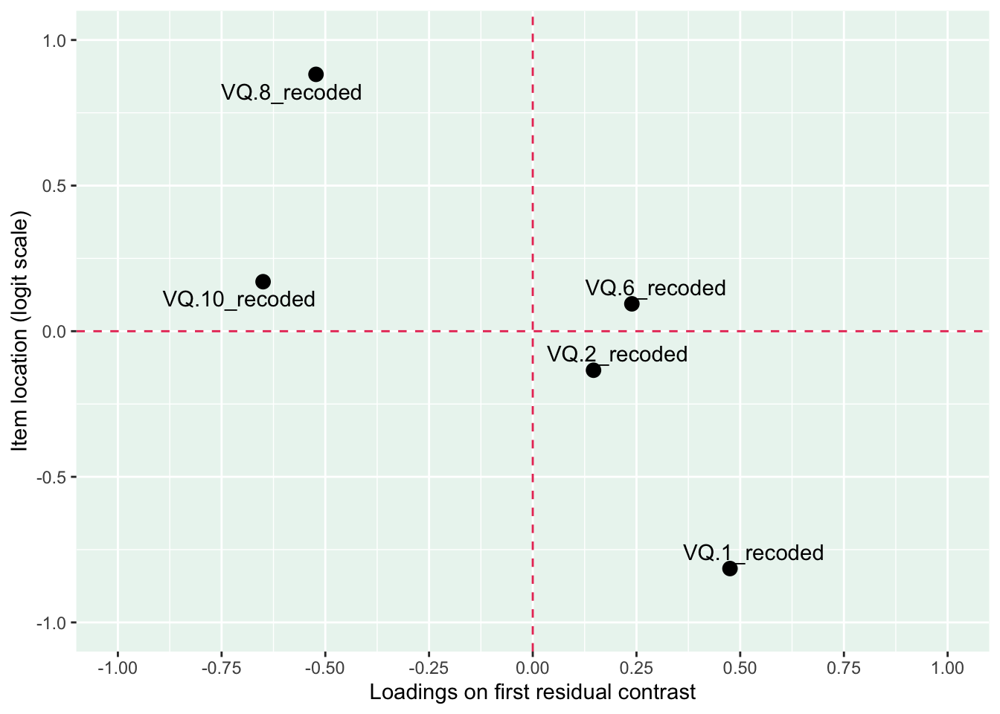
Code
#re-analysis of residual correlations
resid_cor_VQ_obstruction_recoded <- RIgetResidCor(VQ_obstruction_data_rasch_recoded_na_omit,
iterations = 800,
cpu = 10)
RIresidcorr(VQ_obstruction_data_rasch_recoded_na_omit, cutoff = resid_cor_VQ_obstruction_recoded$p99)| VQ.1_recoded | VQ.2_recoded | VQ.6_recoded | VQ.8_recoded | VQ.10_recoded | |
|---|---|---|---|---|---|
| VQ.1_recoded | |||||
| VQ.2_recoded | -0.13 | ||||
| VQ.6_recoded | -0.14 | -0.23 | |||
| VQ.8_recoded | -0.32 | -0.11 | -0.18 | ||
| VQ.10_recoded | -0.28 | -0.25 | -0.23 | 0.08 | |
| Note: | |||||
|
Relative cut-off value is 0.149, which is 0.329 above the average correlation (-0.18). Correlations above the cut-off are highlighted in red text. |
Code
#re-analysis of partial gamma coefficients (assessing local independence)
RIpartgamLD(VQ_obstruction_data_rasch_recoded_na_omit) #shows only significant results[1] "No statistically significant local dependency found."Code
partgam_LD(as.data.frame(VQ_obstruction_data_rasch_recoded_na_omit)) #shows all output, also non-significant results Item1 Item2 gamma se pvalue padj.BH sig lower upper
1 VQ.1_recoded VQ.2_recoded 0.1373 0.1466 0.3490 1 -0.1500 0.4245
2 VQ.1_recoded VQ.6_recoded 0.1854 0.1290 0.1506 1 -0.0674 0.4382
3 VQ.1_recoded VQ.8_recoded -0.2701 0.1692 0.1103 1 -0.6017 0.0615
4 VQ.1_recoded VQ.10_recoded -0.1154 0.1563 0.4604 1 -0.4217 0.1910
5 VQ.2_recoded VQ.6_recoded 0.0033 0.1381 0.9811 1 -0.2675 0.2740
6 VQ.2_recoded VQ.8_recoded -0.0099 0.1661 0.9525 1 -0.3354 0.3156
7 VQ.2_recoded VQ.10_recoded 0.0342 0.1465 0.8152 1 -0.2528 0.3213
8 VQ.6_recoded VQ.8_recoded -0.0135 0.1677 0.9361 1 -0.3422 0.3153
9 VQ.6_recoded VQ.10_recoded -0.1176 0.1550 0.4479 1 -0.4214 0.1862
10 VQ.8_recoded VQ.10_recoded 0.2727 0.1656 0.0995 1 -0.0517 0.5972
Item1 Item2 gamma se pvalue padj.BH sig lower upper
1 VQ.2_recoded VQ.1_recoded 0.1175 0.1295 0.3642 1 -0.1363 0.3712
2 VQ.6_recoded VQ.1_recoded 0.1625 0.1284 0.2056 1 -0.0891 0.4142
3 VQ.6_recoded VQ.2_recoded -0.0561 0.1372 0.6825 1 -0.3250 0.2128
4 VQ.8_recoded VQ.1_recoded -0.2989 0.1680 0.0752 1 -0.6282 0.0304
5 VQ.8_recoded VQ.2_recoded -0.0042 0.1680 0.9801 1 -0.3334 0.3251
6 VQ.8_recoded VQ.6_recoded -0.1034 0.1559 0.5069 1 -0.4089 0.2020
7 VQ.10_recoded VQ.1_recoded -0.1338 0.1464 0.3609 1 -0.4207 0.1532
8 VQ.10_recoded VQ.2_recoded -0.0609 0.1689 0.7183 1 -0.3919 0.2701
9 VQ.10_recoded VQ.6_recoded -0.1447 0.1466 0.3235 1 -0.4319 0.1426
10 VQ.10_recoded VQ.8_recoded 0.2919 0.1784 0.1018 1 -0.0577 0.6414Code
#re-analysis of targeting
RItargeting(VQ_obstruction_data_rasch_recoded_na_omit)
Code
#re-analysis of item hierarchy
itemlabels <- data.frame(itemnr = names(VQ_obstruction_data_rasch_recoded_na_omit),
item = NA)
RIitemHierarchy(VQ_obstruction_data_rasch_recoded_na_omit)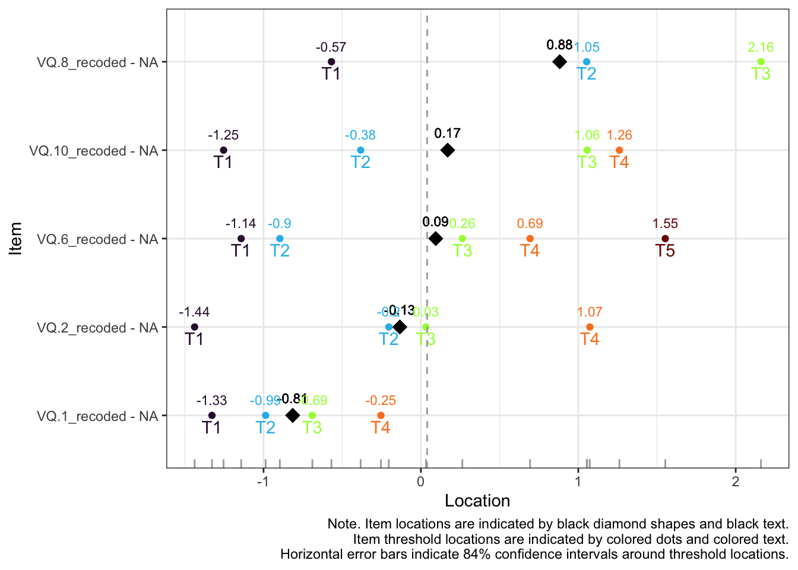
Code
#threshold locations
RIitemparams(VQ_obstruction_data_rasch_recoded_na_omit)| Threshold 1 | Threshold 2 | Threshold 3 | Threshold 4 | Threshold 5 | Item location | |
|---|---|---|---|---|---|---|
| VQ.1_recoded | -1.32 | -0.96 | -0.72 | -0.27 | NA | -0.82 |
| VQ.2_recoded | -1.44 | -0.22 | 0.02 | 1.10 | NA | -0.14 |
| VQ.6_recoded | -1.14 | -0.91 | 0.24 | 0.72 | 1.57 | 0.1 |
| VQ.8_recoded | -0.58 | 1.05 | 2.18 | NA | NA | 0.88 |
| VQ.10_recoded | -1.26 | -0.39 | 1.06 | 1.28 | NA | 0.17 |
| Note: | ||||||
| Item location is the average of the thresholds for each item. |


Response categories in VQ_obstruction is now ordered. All items in VQ_obstruction works fine enough for all to be kept. Moving on to the validity analysis.
5.9 VQ_obstruction and BEA validity analysis
Validity between VQ_obstruction and BEA is investigated by correlation analysis. As both scales has undergone Rasch analysis, participants theta estimates (computed with weighted likelihood estimation - WLE) will be correlated, and since thetas are interval data, Pearson’s correlation is applied.
Code
#complete cases data frame for validity analyses
#removing missing values in relevant items for complete cases analysis
#only BE items and one item from the other scales in the bulls eye study
#is needed (in this case the SubjektivPrestation item)
#this is because there are no missing values for the other scales
#after the intervention study (Hockeystudien) participants have been removed
#therefore this data frame will work for all validity analyses
items_validity_analyses <- c(
"BE_Competition_recoded",
"BE_Training_recoded",
"BE_PreparationRecovery",
"BE_Life",
"SubjektivPrestation"
)
data_complete_cases <- bulls_eye_merged_superfinal_data[complete.cases(bulls_eye_merged_superfinal_data[, items_validity_analyses]), ]
#155 participants to begin with
#33 participants from the intervention study (Hockeystudien) were removed (did not complete any scale beside Bulls Eye)
#1 participant (not from the intervention study) who completed the other scales but not the dartboard in Bulls Eye (only other parts of BE) and were therefore removed
#results in a complete cases data frame with 121 participants
nrow(data_complete_cases)[1] 121Code
#item data frames
BE_validity_analyses <- data_complete_cases[, c(
"BE_Competition_recoded",
"BE_Training_recoded",
"BE_PreparationRecovery",
"BE_Life"
)]
VQ_obstruction_validity_analyses <- data_complete_cases[, c(
"VQ.1_recoded",
"VQ.2_recoded",
"VQ.6_recoded",
"VQ.8_recoded",
"VQ.10_recoded"
)]
#extracting thetas
BE_thetas <- RIestThetas(BE_validity_analyses)
VQ_obstruction_thetas <- RIestThetas(VQ_obstruction_validity_analyses)
#adding thetas to the data frame
data_complete_cases$BE_thetas_WLE <- BE_thetas$WLE
data_complete_cases$VQ_obstruction_thetas_WLE <- VQ_obstruction_thetas$WLECode
correlation_BE_VQ_obstruction <- cor_test(
data_complete_cases,
x = "BE_thetas_WLE",
y = "VQ_obstruction_thetas_WLE",
method = "pearson"
)
print(correlation_BE_VQ_obstruction)Parameter1 | Parameter2 | r | 95% CI | t(119) | p
---------------------------------------------------------------------------------------
BE_thetas_WLE | VQ_obstruction_thetas_WLE | -0.45 | [-0.58, -0.29] | -5.44 | < .001***
Observations: 121Code
plot(correlation_BE_VQ_obstruction)
Some participants did not complete BEA and VQ during the same day as intended. Therefore, a sensitivity analysis is conducted.
Code
#creating data frame with only participants that completed Bulls Eye and the other scales during the same day
#since 17 participants did not (has already been checked in a prior validity analysis), 104 participants will remain in the sensitivity analysis
data_complete_cases_less_than_1day <- subset(data_complete_cases, time_latency_survey1_bulls_eye1_days < 1)Code
#looking only at participants who completed Bulls Eye and the other scales during the same day (N = 104)
#sensitivity analysis VQ_obstruction and BE
BE_validity_analyses_less1day <- data_complete_cases_less_than_1day[, c(
"BE_Competition_recoded",
"BE_Training_recoded",
"BE_PreparationRecovery",
"BE_Life"
)]
VQ_obstruction_validity_analyses_less1day <- data_complete_cases_less_than_1day[, c(
"VQ.1_recoded",
"VQ.2_recoded",
"VQ.6_recoded",
"VQ.8_recoded",
"VQ.10_recoded"
)]
#extracting thetas
BE_thetas_less1day <- RIestThetas(BE_validity_analyses_less1day)
VQ_obstruction_thetas_less1day <- RIestThetas(VQ_obstruction_validity_analyses_less1day)
#adding thetas to the data frame
data_complete_cases_less_than_1day$BE_thetas_less1day_WLE <- BE_thetas_less1day$WLE
data_complete_cases_less_than_1day$VQ_obstruction_thetas_less1day_WLE <- VQ_obstruction_thetas_less1day$WLE
#analysis only with participants completing Bulls Eye and VQ the same day
correlation_BE_VQ_obstruction_less1day <- cor_test(
data_complete_cases_less_than_1day,
x = "BE_thetas_less1day_WLE",
y = "VQ_obstruction_thetas_less1day_WLE",
method = "pearson"
)
print(correlation_BE_VQ_obstruction_less1day)Parameter1 | Parameter2 | r
-------------------------------------------------------------------
BE_thetas_less1day_WLE | VQ_obstruction_thetas_less1day_WLE | -0.41
Parameter1 | 95% CI | t(102) | p
------------------------------------------------------------
BE_thetas_less1day_WLE | [-0.56, -0.24] | -4.57 | < .001***
Observations: 104Code
#we can also check if there is a statistically significant difference
#by adding same or different day as a predictor
data_complete_cases_sensitivity_analysis <- data_complete_cases %>%
mutate(group = factor(ifelse(time_latency_survey1_bulls_eye1_days < 1,"same_day","different_day")))
m0_VQ_obstruction <- lm(VQ_obstruction_thetas_WLE ~ BE_thetas_WLE, data = data_complete_cases_sensitivity_analysis)
m1_VQ_obstruction <- lm(VQ_obstruction_thetas_WLE ~ BE_thetas_WLE + group, data = data_complete_cases_sensitivity_analysis)
anova(m0_VQ_obstruction, m1_VQ_obstruction)Analysis of Variance Table
Model 1: VQ_obstruction_thetas_WLE ~ BE_thetas_WLE
Model 2: VQ_obstruction_thetas_WLE ~ BE_thetas_WLE + group
Res.Df RSS Df Sum of Sq F Pr(>F)
1 119 78.711
2 118 78.444 1 0.26647 0.4008 0.5279Adding whether BE and VQ_obstruction were completed during the same day or not as a predictor did not significantly alter the results.
5.10 BEA and Valuing Questionnaire (VQ) subscales: Partial correlations
Partial correlations were conducted to examine the association between BEA and VQ sub-scales, while controlling for the shared variance among the sub-scales.
Code
#complete cases data frame for validity analyses
#removing missing values in relevant items for complete cases analysis
#only BE items and one item from the other scales in the bulls eye study
#is needed (in this case the SubjektivPrestation item)
#this is because there are no missing values for the other scales
#after the intervention study (Hockeystudien) participants have been removed
#therefore this data frame will work for all validity analyses
items_validity_analyses <- c(
"BE_Competition_recoded",
"BE_Training_recoded",
"BE_PreparationRecovery",
"BE_Life",
"SubjektivPrestation"
)
data_complete_cases <- bulls_eye_merged_superfinal_data[complete.cases(bulls_eye_merged_superfinal_data[, items_validity_analyses]), ]
#155 participants to begin with
#33 participants from the intervention study (Hockeystudien) were removed (did not complete any scale beside Bulls Eye)
#1 participant (not from the intervention study) who completed the other scales but not the dartboard in Bulls Eye (only other parts of BE) and were therefore removed
#results in a complete cases data frame with 121 participants
nrow(data_complete_cases)[1] 121Code
#item data frames
BE_validity_analyses <- data_complete_cases[, c(
"BE_Competition_recoded",
"BE_Training_recoded",
"BE_PreparationRecovery",
"BE_Life"
)]
VQ_progress_validity_analyses <- data_complete_cases[, c(
"VQ.4_recoded",
"VQ.5_recoded",
"VQ.7_recoded",
"VQ.9_recoded"
)]
VQ_obstruction_validity_analyses <- data_complete_cases[, c(
"VQ.1_recoded",
"VQ.2_recoded",
"VQ.6_recoded",
"VQ.8_recoded",
"VQ.10_recoded"
)]
#extracting thetas
BE_thetas <- RIestThetas(BE_validity_analyses)
VQ_progress_thetas <- RIestThetas(VQ_progress_validity_analyses)
VQ_obstruction_thetas <- RIestThetas(VQ_obstruction_validity_analyses)
#adding thetas to the data frame
data_complete_cases$BE_thetas_WLE <- BE_thetas$WLE
data_complete_cases$VQ_progress_thetas_WLE <- VQ_progress_thetas$WLE
data_complete_cases$VQ_obstruction_thetas_WLE <- VQ_obstruction_thetas$WLECode
# Correlation Matrix (pearson-method)
Parameter1 | Parameter2 | r | 95% CI | t(119) | p
---------------------------------------------------------------------------------------
BE_thetas_WLE | VQ_progress_thetas_WLE | 0.32 | [ 0.15, 0.48] | 3.74 | < .001***
BE_thetas_WLE | VQ_obstruction_thetas_WLE | -0.30 | [-0.45, -0.13] | -3.44 | < .001***
p-value adjustment method: Holm (1979)
Observations: 121